<title>Sung Text in Time</title>
<meta name="claude:viewport-fit-sides" content="cover">
<link rel="preconnect" href="https://fonts.googleapis.com">
<link rel="preconnect" href="https://fonts.gstatic.com" crossorigin>
<link rel="stylesheet" href="https://fonts.googleapis.com/css2?family=Bodoni+Moda:ital,opsz,wght@0,6..96,500;0,6..96,700;1,6..96,500&family=Source+Serif+4:ital,opsz,wght@0,8..60,400;0,8..60,600;1,8..60,400&family=IBM+Plex+Mono:wght@400;500&display=swap">
<style>
/* Layout: one reading column (~68ch) like a printed paper; figures and wide tables break out to 1040px. */
:root {
  --paper: #f5f6f8;
  --sheet: #ffffff;
  --ink: #16181d;
  --ink-2: #4b505b;
  --muted: #7a7f8a;
  --rule: #d8dbe2;
  --accent: #1d3767;      /* engraver's ink blue */
  --lit: #b8902f;         /* the viewer's highlight gold */
  --lit-bg: rgba(201, 168, 76, 0.16);
  --code-bg: #eceef2;
  --good: #2f6b3f;
  --bad: #9a3b2f;
  --f-display: "Bodoni Moda", "Didot", "Bodoni 72", Georgia, serif;
  --f-body: "Source Serif 4", "Iowan Old Style", Georgia, serif;
  --f-mono: "IBM Plex Mono", ui-monospace, "SF Mono", Menlo, monospace;
  --col: 68ch;
  --wide: 1040px;
}
@media (prefers-color-scheme: dark) {
  :root:not([data-theme="light"]) {
    --paper: #111318; --sheet: #181b22; --ink: #e7e8ec; --ink-2: #b3b8c3; --muted: #858b97;
    --rule: #2c313b; --accent: #a9bfe8; --lit: #d9b95a; --lit-bg: rgba(217, 185, 90, 0.16);
    --code-bg: #1f232c; --good: #7fc18f; --bad: #e08a7c; color-scheme: dark;
  }
}
:root[data-theme="dark"] {
  --paper: #111318; --sheet: #181b22; --ink: #e7e8ec; --ink-2: #b3b8c3; --muted: #858b97;
  --rule: #2c313b; --accent: #a9bfe8; --lit: #d9b95a; --lit-bg: rgba(217, 185, 90, 0.16);
  --code-bg: #1f232c; --good: #7fc18f; --bad: #e08a7c; color-scheme: dark;
}
* { box-sizing: border-box; }
body {
  background: var(--paper); color: var(--ink);
  font-family: var(--f-body); font-size: 17px; line-height: 1.6;
  padding-left: max(16px, env(safe-area-inset-left, 0px));
  padding-right: max(16px, env(safe-area-inset-right, 0px));
  padding-block: 40px 96px;
}
main { max-width: var(--wide); margin: 0 auto; }
main > * { max-width: var(--col); margin-left: auto; margin-right: auto; }
main > figure, main > .wide { max-width: var(--wide); }
h1, h2, h3 { font-family: var(--f-display); font-weight: 700; text-wrap: balance; line-height: 1.15; }
h1 { font-size: clamp(2.4rem, 6vw, 3.6rem); margin: 0 auto 0.3em; letter-spacing: -0.01em; }
h2 { font-size: 1.75rem; margin-top: 2.6em; margin-bottom: 0.5em; padding-top: 0.7em; border-top: 1px solid var(--rule); }
h3 { font-size: 1.25rem; font-weight: 500; font-style: italic; margin-top: 1.8em; margin-bottom: 0.3em; }
h2 .n, h3 .n { font-family: var(--f-mono); font-style: normal; font-size: 0.6em; font-weight: 500; color: var(--accent); vertical-align: 0.25em; margin-right: 0.6em; letter-spacing: 0.04em; }
p { margin: 0 auto 1em; }
a { color: var(--accent); }
a:focus-visible { outline: 2px solid var(--lit); outline-offset: 2px; }
.eyebrow { font-family: var(--f-mono); font-size: 0.78rem; letter-spacing: 0.12em; text-transform: uppercase; color: var(--muted); margin-bottom: 1.2em; }
.subtitle { font-family: var(--f-display); font-style: italic; font-size: 1.35rem; color: var(--ink-2); margin-bottom: 1.4em; }
.byline { font-family: var(--f-mono); font-size: 0.82rem; color: var(--muted); margin-bottom: 2.2em; }
.abstract { background: var(--sheet); border: 1px solid var(--rule); padding: 1.2em 1.4em; border-radius: 3px; }
.abstract h4 { font-family: var(--f-mono); font-size: 0.75rem; letter-spacing: 0.12em; text-transform: uppercase; color: var(--muted); margin: 0 0 0.6em; font-weight: 500; }
.abstract p:last-child { margin-bottom: 0; }
nav.toc { font-size: 0.95rem; margin-top: 1.6em; }
nav.toc ol { columns: 2 16em; padding-left: 1.4em; margin: 0; }
nav.toc li { break-inside: avoid; }
code, .mono { font-family: var(--f-mono); font-size: 0.86em; }
code { background: var(--code-bg); padding: 0.08em 0.35em; border-radius: 3px; overflow-wrap: anywhere; }
pre { font-family: var(--f-mono); font-size: 0.82rem; line-height: 1.5; background: var(--code-bg); padding: 1em 1.2em; border-radius: 3px; overflow-x: auto; }
ul, ol { margin: 0 auto 1em; padding-left: 1.4em; }
li { margin-bottom: 0.3em; }
li > ul { margin-top: 0.3em; margin-bottom: 0; }
blockquote { margin: 1.2em auto; padding: 0.2em 0 0.2em 1.1em; border-left: 3px solid var(--lit); font-style: italic; color: var(--ink-2); }
blockquote .who { display: block; font-style: normal; font-family: var(--f-mono); font-size: 0.75rem; color: var(--muted); margin-top: 0.3em; }
.lit { background: var(--lit-bg); box-shadow: inset 0 -2px 0 var(--lit); padding: 0 0.15em; }
figure { margin: 2em auto; }
figure img { display: block; width: 100%; height: auto; border: 1px solid var(--rule); border-radius: 3px; background: #fff; }
figure.pair { display: grid; grid-template-columns: 1fr 1fr; gap: 14px; }
figure.pair > div { min-width: 0; }
figure.pair figcaption { grid-column: 1 / -1; }
figure.narrow { max-width: 640px; }
figcaption { font-size: 0.9rem; color: var(--ink-2); margin-top: 0.7em; line-height: 1.5; max-width: var(--col); }
figcaption b { font-family: var(--f-mono); font-weight: 500; font-size: 0.82rem; color: var(--accent); letter-spacing: 0.04em; margin-right: 0.4em; }
.tablewrap { overflow-x: auto; margin: 1.4em auto; }
table { border-collapse: collapse; width: 100%; font-size: 0.9rem; line-height: 1.45; font-variant-numeric: tabular-nums; }
th, td { text-align: left; vertical-align: top; padding: 0.45em 0.7em; border-bottom: 1px solid var(--rule); }
th { font-family: var(--f-mono); font-weight: 500; font-size: 0.74rem; letter-spacing: 0.06em; text-transform: uppercase; color: var(--muted); border-bottom: 1.5px solid var(--ink-2); }
td.num, th.num { text-align: right; white-space: nowrap; }
td .best { color: var(--good); font-weight: 600; }
td .worst { color: var(--bad); }
caption { caption-side: bottom; text-align: left; font-size: 0.85rem; color: var(--muted); padding-top: 0.6em; }
/* the three-route diagram */
.routes { display: grid; gap: 12px; margin: 1.6em auto; }
.lane { display: grid; grid-template-columns: 9.5em 1fr; gap: 12px; align-items: stretch; }
.lane .tag { font-family: var(--f-mono); font-size: 0.78rem; color: var(--accent); padding-top: 0.55em; line-height: 1.35; }
.lane .tag strong { display: block; font-family: var(--f-display); font-size: 1.4rem; font-weight: 700; color: var(--ink); }
.steps { display: flex; flex-wrap: wrap; gap: 6px; align-items: center; min-width: 0; }
.step { background: var(--sheet); border: 1px solid var(--rule); border-radius: 3px; padding: 0.4em 0.7em; font-size: 0.86rem; line-height: 1.3; }
.step.shared { border-color: var(--lit); background: var(--lit-bg); }
.arrow { color: var(--muted); font-family: var(--f-mono); font-size: 0.85rem; }
.legend { font-size: 0.85rem; color: var(--muted); }
.legend .sw { display: inline-block; width: 0.9em; height: 0.9em; vertical-align: -0.1em; border: 1px solid var(--lit); background: var(--lit-bg); margin-right: 0.3em; }
/* the step-by-step data-flow diagrams */
.flow { display: grid; gap: 8px; margin: 1.6em auto; }
.flow .row3 { display: grid; grid-template-columns: repeat(3, minmax(0, 1fr)); gap: 10px; }
.flow .cols { display: grid; grid-template-columns: repeat(2, minmax(0, 1fr)); gap: 18px; align-items: start; }
.flow .col { display: grid; gap: 8px; min-width: 0; }
.flow .colhead { font-family: var(--f-mono); font-size: 0.74rem; letter-spacing: 0.1em; text-transform: uppercase; color: var(--muted); border-bottom: 1px solid var(--rule); padding-bottom: 0.3em; }
.flow .band { font-family: var(--f-mono); font-size: 0.74rem; letter-spacing: 0.1em; text-transform: uppercase; color: var(--muted); text-align: center; border-top: 1px solid var(--rule); padding-top: 0.6em; margin-top: 0.4em; }
.node { border-radius: 3px; padding: 0.55em 0.75em; font-size: 0.84rem; line-height: 1.4; min-width: 0; }
.node.in { background: var(--sheet); border: 2px solid var(--accent); }
.node.in .t { font-family: var(--f-display); font-weight: 700; font-size: 1.05rem; color: var(--ink); display: block; margin-bottom: 0.15em; }
.node.proc { background: var(--sheet); border: 1px solid var(--rule); }
.node.proc .t { font-weight: 600; }
.node.proc .num { font-family: var(--f-mono); font-size: 0.74rem; color: var(--accent); margin-right: 0.5em; }
.node.proc .tool { display: block; font-family: var(--f-mono); font-size: 0.76rem; color: var(--ink-2); overflow-wrap: anywhere; margin-top: 0.15em; }
.node.file { background: var(--code-bg); border: 1px dashed var(--muted); margin-left: 1.2em; }
.node.file .f { font-family: var(--f-mono); font-size: 0.8rem; font-weight: 500; color: var(--ink); overflow-wrap: anywhere; }
.node.file .d { display: block; font-size: 0.8rem; color: var(--ink-2); margin-top: 0.2em; }
.node.file.out { border: 2px solid var(--lit); background: var(--lit-bg); margin-left: 0; }
.node.file.out .f { font-size: 0.9rem; }
.node .badges { display: flex; flex-wrap: wrap; gap: 4px; margin-top: 0.35em; }
.badge { font-family: var(--f-mono); font-size: 0.68rem; letter-spacing: 0.03em; padding: 0.05em 0.45em; border-radius: 2px; border: 1px solid var(--rule); color: var(--ink-2); background: var(--sheet); white-space: nowrap; }
.badge.local { color: var(--bad); border-color: var(--bad); }
.badge.share { color: var(--good); border-color: var(--good); }
.badge.def { color: var(--ink); border-color: var(--lit); background: var(--lit-bg); }
.badge.emerg { color: var(--accent); border-color: var(--accent); }
.flow .dn { text-align: center; color: var(--muted); font-family: var(--f-mono); font-size: 0.9rem; line-height: 1; }
.flow .dn.l { text-align: left; padding-left: 1.6em; }
.keyrow { display: flex; flex-wrap: wrap; gap: 6px 14px; font-size: 0.82rem; color: var(--muted); align-items: center; }
.keyrow .sample { display: inline-block; width: 2.2em; height: 1em; vertical-align: -0.15em; margin-right: 0.35em; border-radius: 2px; }
.keyrow .s-in { border: 2px solid var(--accent); background: var(--sheet); }
.keyrow .s-proc { border: 1px solid var(--rule); background: var(--sheet); }
.keyrow .s-file { border: 1px dashed var(--muted); background: var(--code-bg); }
.keyrow .s-out { border: 2px solid var(--lit); background: var(--lit-bg); }
/* glossary */
dl.gloss { display: grid; grid-template-columns: max-content 1fr; gap: 0.45em 1.2em; font-size: 0.92rem; }
dl.gloss dt { font-weight: 600; }
dl.gloss dd { margin: 0; min-width: 0; color: var(--ink-2); }
h3.glossgroup { font-size: 1.05rem; }
/* production stages */
.stages { display: grid; grid-template-columns: repeat(auto-fill, minmax(15em, 1fr)); gap: 12px; margin: 1.4em auto; }
.stage { background: var(--sheet); border: 1px solid var(--rule); border-radius: 3px; padding: 0.9em 1em; }
.stage .k { font-family: var(--f-mono); font-size: 0.74rem; color: var(--muted); letter-spacing: 0.08em; }
.stage h4 { font-family: var(--f-mono); font-size: 1rem; font-weight: 500; margin: 0.1em 0 0.4em; color: var(--accent); }
.stage p { font-size: 0.88rem; margin: 0; line-height: 1.45; }
.stage.per-rec { border-style: dashed; }
.note { font-size: 0.92rem; color: var(--ink-2); }
dl.params { display: grid; grid-template-columns: max-content 1fr; gap: 0.3em 1.2em; font-size: 0.9rem; }
dl.params dt { font-family: var(--f-mono); font-size: 0.82rem; color: var(--accent); }
dl.params dd { margin: 0; min-width: 0; }
.eq { font-family: var(--f-mono); font-size: 0.88rem; background: var(--sheet); border: 1px solid var(--rule); padding: 0.6em 1em; border-radius: 3px; overflow-x: auto; }
@media (max-width: 640px) {
  body { font-size: 16px; }
  figure.pair { grid-template-columns: 1fr; }
  .lane { grid-template-columns: 1fr; gap: 4px; }
  .lane .tag { padding-top: 0; }
  dl.params, dl.gloss { grid-template-columns: 1fr; }
  dl.params dd, dl.gloss dd { margin-bottom: 0.5em; }
}
@media (max-width: 760px) {
  .flow .row3, .flow .cols { grid-template-columns: 1fr; }
}
</style>

<main>
  <div class="eyebrow">Technical report · libretto / roon-rd · November 2026</div>
  <h1>Sung Text in Time</h1>
  <p class="subtitle">Automatic, score-derived lyrics with a literal gloss for opera recordings: method, results and the road to a production pipeline</p>
  <p class="byline">David Rivas, with Claude · drafted 8 November 2026 · covers work of 4–8 November 2026</p>

  <section class="abstract">
    <h4>Abstract</h4>
    <p>We built a display that shows, while an opera recording plays in Roon, the words being sung and a word-for-word English gloss, much as streaming services show song lyrics. The text comes from the score's vocal parts, not from a published libretto, so repeats and simultaneous ensemble lines are shown as sung. Timing comes from aligning the score to the recording with multiscale dynamic time warping on chroma (pitch-class) and onset features. Where there is no usable score (secco recitative), a multilingual speech aligner places the text on a separated vocal track instead. No step uses hand-marked timing.</p>
    <p>We tested the method on six passages of <i>Le nozze di Figaro</i>, each in two recordings (Solti 1981, Currentzis 2014): the Act III Sextet, two recitatives, the aria “Voi che sapete”, and the 940-bar Act II finale. With an engraved, born-digital vocal score read directly from its PDF, entries after a silence land a median of 0.07–0.10 s from where singing is heard, and 91–95% land within 1 s. That is well inside the 1–2 s target. Reading a scanned score by optical music recognition gave 0.35–0.63 s and 62–89%. The listener's verdict on the finale was “near perfect”.</p>
    <p>Terms and acronyms are spelled out where they first appear, and collected in a glossary (Appendix B).</p>
    <p>This report describes the theory behind each tool and the results of each experiment, with intermediate figures. It records every manual step taken along the way, describes the software written, and states the production pipeline we intend to build next.</p>
  </section>

  <nav class="toc" aria-label="Contents">
    <ol>
      <li><a href="#intro">Problem and goal</a></li>
      <li><a href="#material">Material</a></li>
      <li><a href="#overview">Method overview</a></li>
      <li><a href="#score">Reading the score</a></li>
      <li><a href="#audio">Aligning score and recording</a></li>
      <li><a href="#voice">The vocal track</a></li>
      <li><a href="#text">Text, gloss and lines</a></li>
      <li><a href="#recit">Recitative: aligning text, not notes</a></li>
      <li><a href="#viewer">The viewer</a></li>
      <li><a href="#eval">Evaluating without ground truth</a></li>
      <li><a href="#results">Experiments and results</a></li>
      <li><a href="#negative">What didn't work</a></li>
      <li><a href="#hand">Hand tooling</a></li>
      <li><a href="#software">The software</a></li>
      <li><a href="#production">The production pipeline</a></li>
      <li><a href="#limits">Limitations and next steps</a></li>
      <li><a href="#appendix">Appendix A: parameters</a></li>
      <li><a href="#glossary">Appendix B: glossary</a></li>
    </ol>
  </nav>

  <!-- 1 -->
  <h2 id="intro"><span class="n">1</span>Problem and goal</h2>
  <p>Surtitles and published librettos are literary condensations. A libretto prints a line once, while the score may have it sung four times, split across three characters, or overlapping with five other texts. Listening at home with a libretto, you lose your place in any ensemble. The goal here is a display that follows the music itself: the line being sung, lit as it is sung, with a literal English gloss under each Italian phrase.</p>
  <p>The design constraints were set at the outset and held throughout:</p>
  <ul>
    <li><b>Fully automatic per recording.</b> Preparing an opera may take one-time work. Adding a recording of it must not. In particular, nobody marks beats or taps along.</li>
    <li><b>Robust over precise.</b> The first milestone was text within 1–2 s of when it is sung. Errors under a second are treated as negligible.</li>
    <li><b>The score is the source of truth</b> for both the words and the musical structure. Spelling differences between sources don't matter: the score's text is what is shown.</li>
    <li><b>A very literal gloss,</b> phrase by phrase, keeping Italian word order where it still makes sense, so that the English stays close to the sounds heard.</li>
  </ul>
  <p>An earlier attempt, in February 2026, drove the same viewer from a libretto, with segment times estimated from word counts and a plan to correct them by tapping along. It never got close. The user's verdict on the new approach, after testing the aria: “This approach works far, far, better than what we tried a few months ago.”</p>

  <!-- 2 -->
  <h2 id="material"><span class="n">2</span>Material</h2>
  <div class="tablewrap">
    <table>
      <thead><tr><th>Passage</th><th>Kind</th><th class="num">Size</th><th>Score used</th><th>Solti 1981 (Decca)</th><th>Currentzis 2014 (Sony)</th></tr></thead>
      <tbody>
        <tr><td>No. 18 Sestetto “Riconosci in questo amplesso” (III)</td><td>ensemble, 6 voices</td><td class="num">140 bars</td><td>typeset IMSLP PDF (WIMA), MIDI as reference</td><td>one track, with the recitative after it</td><td>one track</td></tr>
        <tr><td>Recit. “Eccovi, o caro amico” / “Andiam, bel paggio” (III)</td><td>secco</td><td class="num">≈2 min</td><td>none</td><td>same track as the Sextet</td><td>own track</td></tr>
        <tr><td>No. 11 Canzona “Voi che sapete” (II)</td><td>aria, strophic</td><td class="num">≈2.5 min</td><td>none (text from Ricordi)</td><td>one track with the next recitative</td><td>own track</td></tr>
        <tr><td>Recit. “Bravo! che bella voce!” (II)</td><td>secco</td><td class="num">≈1 min</td><td>none</td><td>same track as the aria</td><td>own track</td></tr>
        <tr><td>No. 15 Finale “Esci omai, garzon malnato” (II)</td><td>ensemble finale, 2–8 voices</td><td class="num">940 bars</td><td>Ricordi scan (Audiveris), then Bärenreiter BA 4565 vector PDF</td><td>3 tracks</td><td>7 tracks</td></tr>
      </tbody>
    </table>
  </div>
  <p>The two recordings differ in useful ways. Solti uses modern pitch and steady studio tempos. Currentzis uses period instruments at about A = 431, broad tempos with long dramatic pauses, and fortepiano improvisation in the recitatives. His tracks also cut the finale into seven pieces, several starting mid-number. Numbers follow the Bärenreiter (Neue Mozart-Ausgabe) numbering; the Ricordi vocal score numbers differently.</p>
  <p>The scores came from three sources:</p>
  <ul>
    <li><b>Typeset Sextet (IMSLP 115717, WIMA):</b> from IMSLP (the International Music Score Library Project, a public-domain score library), originally from WIMA (the Werner Icking Music Archive). A vector PDF engraved in Finale (a commercial music-notation program), plus the engraver's MIDI file (Musical Instrument Digital Interface: notes as pitches and times) with 15 tracks and 140 bars of 4/4. The MIDI served as an independent reference while testing. The method does not need it, because MIDI scores of operas are not generally available.</li>
    <li><b>Ricordi vocal score:</b> a public-domain scan of about 350 pages, read by optical music recognition.</li>
    <li><b>Bärenreiter vocal score BA 4565:</b> a born-digital PDF bought by the user. It is a licensed personal copy. The PDF and the full decode (notes and syllables) stay local. The licence allows short excerpts for study, so Figure 1 reproduces one page, without its purchase footer.</li>
  </ul>

  <!-- 3 -->
  <h2 id="overview"><span class="n">3</span>Method overview</h2>
  <p>Work divides into a part done once per opera, in <i>score time</i>, and a part done per recording, in <i>audio time</i>. Three routes lead to a timed passage. They differ only in where the score comes from, and whether a score is used at all. Everything after timing is shared.</p>
  <p>This section gives the method at two levels of detail. <b>Diagram 1</b> is a summary of the three routes. Each of its boxes stands for several steps, and it shows no files. <b>Diagram 2</b> (§3.1) is the pipeline as it was actually run for the Act II finale: every step, the script that does it, and the file it reads and writes, from the score PDF and the recording to the interchange file the viewer reads. §3.2 describes each file's format and §3.3 defines the interchange file. The planned production pipeline gets the same treatment in §15.</p>

  <p class="note"><b>DIAGRAM 1</b> The three routes at a glance (summary).</p>
  <div class="routes wide" role="img" aria-label="Three routes from score or text to timed lines, sharing the later steps">
    <div class="lane"><div class="tag"><strong>A</strong>scan or typeset score</div>
      <div class="steps"><span class="step">PDF</span><span class="arrow">→</span><span class="step">Audiveris OMR (notes run + OCR run)</span><span class="arrow">→</span><span class="step">shared bar grid; who sings each staff</span><span class="arrow">→</span><span class="step shared">lines in score time</span><span class="arrow">→</span><span class="step shared">MrMsDTW score → audio</span></div></div>
    <div class="lane"><div class="tag"><strong>B</strong>born-digital score</div>
      <div class="steps"><span class="step">PDF</span><span class="arrow">→</span><span class="step">vector decode: glyphs, lines, text</span><span class="arrow">→</span><span class="step">bars, tempo, metre, labelled staves</span><span class="arrow">→</span><span class="step shared">lines in score time</span><span class="arrow">→</span><span class="step shared">MrMsDTW score → audio</span></div></div>
    <div class="lane"><div class="tag"><strong>C</strong>no score</div>
      <div class="steps"><span class="step">reference text</span><span class="arrow">→</span><span class="step">MMS_FA forced alignment on the vocal stem</span><span class="arrow">→</span><span class="step">word and phrase times</span></div></div>
    <div class="lane"><div class="tag">all routes</div>
      <div class="steps"><span class="step shared">clean against reference text + gloss</span><span class="arrow">→</span><span class="step shared">trim out of silences</span><span class="arrow">→</span><span class="step shared">checks</span><span class="arrow">→</span><span class="step shared">split into tracks</span><span class="arrow">→</span><span class="step shared">interchange file → roon-rd viewer</span></div></div>
    <p class="legend"><span class="sw"></span>shared machinery</p>
  </div>
  <p>The tools named in Diagram 1:</p>
  <ul>
    <li><b>Audiveris OMR:</b> an open-source optical music recognition (OMR) program, which turns page images into notation.</li>
    <li><b>MrMsDTW:</b> memory-restricted multiscale dynamic time warping, which maps score time onto audio time (§5.2).</li>
    <li><b>MMS_FA:</b> the forced-alignment model from Meta's Massively Multilingual Speech project. Given audio and its exact text, it finds when each word is said (§8).</li>
    <li><b>Vocal stem:</b> the singers' track, separated from the orchestra by Demucs (§6).</li>
  </ul>
  <p>Appendix B collects these and every other term and acronym.</p>

  <p>The vocabulary used below:</p>
  <ul>
    <li><b>Score time:</b> seconds computed from the notation alone, at a nominal or printed tempo.</li>
    <li><b>Audio time:</b> seconds into a recording.</li>
    <li><b>Alignment:</b> a monotonic map from score time to audio time.</li>
    <li><b>Line:</b> a displayable unit of one character's text, typically a phrase or two.</li>
    <li><b>Interchange file:</b> one JSON file per recording that the viewer reads. It lists tracks, and per track the timed segments with text, translation, gloss and verses (§3.3).</li>
  </ul>

  <h3><span class="n">3.1</span>The pipeline as built, step by step</h3>
  <p>Diagram 2 follows the most general chain built so far, the one for the Act II finale, from the three inputs to the interchange file. Routes A and B differ only in steps 1–2. Route C (recitatives and the aria) joins at step 7C. The Sextet used an earlier chain of scripts (phases 5–9) with the same steps and differently named files (<code>sextet.lines.json</code>, <code>sextet.lines.clean.json</code>, <code>sextet.lines.&lt;rec&gt;.json</code>). In the file names, <code>finale2[ba]</code> means <code>finale2</code> on route A and <code>finale2ba</code> on route B. <code>&lt;rec&gt;</code> is a recording label such as <code>solti</code>. Paths are relative to <code>sextet-experiment/out/</code> unless they begin <code>work/</code>, which stands for <code>~/Development/libretto-work/</code>.</p>

  <div class="flow wide" role="figure" aria-label="Diagram 2: step-by-step data flow from score PDF, reference text and recording to the interchange file">
    <p class="note" style="margin:0"><b>DIAGRAM 2</b> The pipeline as built (Act II finale chain).</p>
    <div class="keyrow"><span><span class="sample s-in"></span>input</span><span><span class="sample s-proc"></span>step (script)</span><span><span class="sample s-file"></span>file written</span><span><span class="sample s-out"></span>interchange file</span><span><span class="badge local">local only</span> licensed or bulk data</span><span><span class="badge share">shareable</span></span><span><span class="badge emerg">emerging format</span></span><span><span class="badge def">defined format</span></span></div>
    <p class="note" style="margin:0">Abbreviations in the boxes:</p>
    <ul class="note" style="margin:0">
      <li><b>OCR:</b> optical character recognition.</li>
      <li><b>DP:</b> dynamic programming.</li>
      <li><b>bpm:</b> beats per minute.</li>
      <li><b>pYIN:</b> a pitch tracker (§6).</li>
      <li><b>DTW:</b> dynamic time warping, the alignment (§5.2); <b>MrMsDTW</b> is its memory-restricted multiscale form.</li>
      <li><b>Chroma, DLNCO, CENS:</b> pitch-class, onset and smoothed pitch-class features (§5.1).</li>
      <li><b>MMS_FA:</b> the speech forced aligner (§8).</li>
    </ul>
    <p class="note" style="margin:0">All are in Appendix B.</p>

    <div class="band">Inputs</div>
    <div class="row3">
      <div class="node in"><span class="t">Score PDF</span>A vocal score, as one of:
        <ul style="margin:0.3em 0 0; padding-left:1.1em">
          <li>a scan (Ricordi), for route A;</li>
          <li>a typeset PDF (IMSLP), for route A;</li>
          <li>a born-digital PDF (Bärenreiter BA 4565), for route B.</li>
        </ul>
        Cut by hand to the number's pages: <code>work/finale2/ricordi_finale2.pdf</code>, <code>work/finale2-ba/ba_finale2.pdf</code>.<div class="badges"><span class="badge local">BA: local only</span></div></div>
      <div class="node in"><span class="t">Reference text and gloss</span>Written by hand per number, by Claude in a session: <code>finale2_text.py</code> and the others. No program generates it.<ul style="margin:0.3em 0 0; padding-left:1.1em"><li>The Italian is typed from the published libretto (murashev.com), split into phrases, and respelled to match the score where they differ.</li><li>The literal English gloss of each phrase is written by hand.</li></ul>The file is only data: a Python dict, <code>TEXT[character]</code>, holding a list of verses, each verse a list of (Italian phrase, literal English) pairs.<div class="badges"><span class="badge share">committed</span></div></div>
      <div class="node in"><span class="t">Recording</span>The album's audio files in <code>~/Dropbox/Audio</code>, read only. The album, disc and track numbers and titles are typed into the command or the <code>RECORDINGS</code> table.<div class="badges"><span class="badge local">never written</span></div></div>
    </div>

    <div class="cols">
      <div class="col">
        <div class="colhead">Per opera · score time</div>
        <div class="node proc"><span class="num">1A</span><span class="t">Read the scan</span> (route A). Two Audiveris runs, one for notes and one with OCR, at about 1 min per page each.<span class="tool">Audiveris batch</span></div>
        <div class="dn l">↓</div>
        <div class="node file"><span class="f">work/finale2/omr/*.mxl, omr_ocr/*.mxl</span><span class="d">MusicXML, plus Audiveris's own <code>.omr</code> project. Parts, bars, notes and lyric syllables as Audiveris read them.</span><div class="badges"><span class="badge local">local only</span></div></div>
        <div class="node proc"><span class="num">1B</span><span class="t">Decode the vector PDF</span> (route B). About 2 s for 110 pages.<span class="tool">ba_vector.py &lt;pdf&gt; &lt;pages&gt; &lt;out&gt;</span></div>
        <div class="dn l">↓</div>
        <div class="node file"><span class="f">work/finale2-ba/ba_score.json</span><span class="d">It contains:
          <ul style="margin:0.2em 0 0; padding-left:1.1em">
            <li><code>bars[]</code>: bar, page, system, timesig, tempo;</li>
            <li><code>notes[]</code>: staff, label, pitch, kind, x, t0, t1;</li>
            <li><code>syllables[]</code>: staff, label, text, t0, t1;</li>
            <li><code>problems[]</code>.</li>
          </ul>
          Times are in bars (bar number plus fraction).</span><div class="badges"><span class="badge local">local only · licensed</span></div></div>
        <div class="dn">↓</div>
        <div class="node proc"><span class="num">2</span><span class="t">Lines in score time.</span>
          <ul style="margin:0.2em 0 0; padding-left:1.1em">
            <li>A: shared bar grid (§4.1) and cast-order dynamic programming (DP, §4.2), at 120 bpm.</li>
            <li>B: label table, plus the tempo table (§4.4).</li>
          </ul>
          Syllables are grouped into lines at rests and gaps.<span class="tool">finale2_score.py (A) · ba_finale2_score.py (B)</span></div>
        <div class="dn l">↓</div>
        <div class="node file"><span class="f">finale2[ba].score.json</span><span class="d">It contains:
          <ul style="margin:0.2em 0 0; padding-left:1.1em">
            <li><code>lines[]</code>: character, voice, the syllabified text, <code>sylls[]</code>, and score_start and score_end in seconds;</li>
            <li><code>notes[]</code>: start, duration, pitch, and instrument (the character);</li>
            <li><code>sections[]</code>: bar, score_s, timesig, tempo, bar_s.</li>
          </ul></span><div class="badges"><span class="badge local">B: local only</span><span class="badge">A: committed</span></div></div>
        <div class="dn">↓ <span style="font-size:0.75rem">+ reference text</span></div>
        <div class="node proc"><span class="num">3</span><span class="t">Clean against the reference.</span> The letter-by-letter dynamic programming (DP) with jumps back (§7.2) gives the reference spelling, the gloss phrases with their score times, and the verses. Phrases are capped and split at gaps.<span class="tool">finale2_build.py clean [--ba]</span></div>
        <div class="dn l">↓</div>
        <div class="node file"><span class="f">finale2[ba].clean.json</span><span class="d">A list of lines, each with:
          <ul style="margin:0.2em 0 0; padding-left:1.1em">
            <li>character and voice;</li>
            <li>text and translation;</li>
            <li><code>gloss[]</code> (§3.3);</li>
            <li><code>verses{}</code>;</li>
            <li>score_start and score_end;</li>
            <li><code>ocr</code>.</li>
          </ul>
          It is independent of any recording: the sung text of the number, in score time.</span><div class="badges"><span class="badge emerg">emerging per-opera format</span></div></div>
      </div>

      <div class="col">
        <div class="colhead">Per recording · audio time</div>
        <div class="node proc"><span class="num">4</span><span class="t">Decode the audio</span> to 44.1 kHz stereo WAV. For a number spanning tracks, the tracks are joined into one timeline (by hand for the finale).<span class="tool">ffmpeg</span></div>
        <div class="dn l">↓</div>
        <div class="node file"><span class="f">work/wav/&lt;rec&gt;-&lt;track&gt;.wav, &lt;rec&gt;-finale2.wav</span><span class="d">Decoded tracks, and the joined act timeline.</span><div class="badges"><span class="badge local">local only · bulk</span></div></div>
        <div class="dn">↓</div>
        <div class="node proc"><span class="num">5</span><span class="t">Separate the voices.</span> Demucs <code>htdemucs</code> in two-stem mode. It took 46 s for the Sextet.<span class="tool">demucs --two-stems vocals</span></div>
        <div class="dn l">↓</div>
        <div class="node file"><span class="f">work/stems/htdemucs/&lt;name&gt;/vocals.wav, no_vocals.wav, tracks.json</span><span class="d">A <i>stem</i> is one separated part of the recording, saved as its own audio file. <code>vocals.wav</code> holds all the singers together, with the orchestra mostly removed. <code>no_vocals.wav</code> holds everything else. <code>tracks.json</code> = <code>{tracks[], offsets[], total}</code>: where each original track starts on the joined timeline.</span><div class="badges"><span class="badge local">local only · bulk</span></div></div>
        <div class="dn">↓</div>
        <div class="node proc"><span class="num">6</span><span class="t">Vocal signals</span> (§6): loudness, singing spans, silences of at least 1 s, entries after silence, and pYIN pitch.<span class="tool">phase6_timeline.py helpers</span></div>
        <div class="dn l">↓</div>
        <div class="node file"><span class="f">(in memory)</span><span class="d">Recomputed by every script that needs them. Only the diagnostic timeline page saves them, as <code>out/timeline/data.js</code>.</span></div>
      </div>
    </div>

    <div class="band">Timing · joins the two halves</div>
    <div class="cols">
      <div class="col">
        <div class="node proc"><span class="num">7</span><span class="t">Align score to recording</span> (routes A, B). The steps are:
          <ol style="margin:0.2em 0 0; padding-left:1.3em">
            <li>chroma, DLNCO and CENS features;</li>
            <li>tuning estimate;</li>
            <li>coarse subsequence DTW;</li>
            <li>placement candidates;</li>
            <li>MrMsDTW;</li>
            <li>a second pass with tempo factors per section.</li>
          </ol>
          Inputs: <code>notes[]</code> from step 2, the joined WAV, and the stem's signals.<span class="tool">finale2_build.py rec &lt;rec&gt; [--ba] → phase4_align.align()</span></div>
        <div class="dn l">↓</div>
        <div class="node file"><span class="f">(in memory) warping path</span><span class="d">Monotonic score s → audio s, interpolated. It is not saved; it is recomputed on each run.</span></div>
        <div class="dn">↓ <span style="font-size:0.75rem">+ clean.json</span></div>
        <div class="node proc"><span class="num">8</span><span class="t">Re-time, trim, check.</span> Every line and gloss phrase is mapped through the path. Then:
          <ul style="margin:0.2em 0 0; padding-left:1.1em">
            <li>melisma extension. A melisma is one syllable sung across several notes; the line is extended to cover all of them;</li>
            <li>silence trimming;</li>
            <li>the checks of §10, printed to the console.</li>
          </ul><span class="tool">finale2_build.py rec</span></div>
        <div class="dn l">↓</div>
        <div class="node file"><span class="f">finale2[ba].lines.&lt;rec&gt;.json</span><span class="d">The same fields as <code>clean.json</code>. <code>start</code> and <code>end</code> are now audio seconds on the joined timeline, and <code>score_start</code> and <code>score_end</code> are kept.</span><div class="badges"><span class="badge emerg">emerging per-recording format</span></div></div>
      </div>
      <div class="col">
        <div class="node proc"><span class="num">7C</span><span class="t">Force-align the text</span> (route C: secco, and the aria).
          <ul style="margin:0.2em 0 0; padding-left:1.1em">
            <li>Inputs: the reference text, the vocal stem at 16 kHz, a <b>region start in seconds</b> and the list of texts, both typed by hand.</li>
            <li>The model is MMS_FA, with a wildcard between speeches.</li>
            <li>It runs a register check and a words-in-silence check.</li>
          </ul><span class="tool">phase10_recit.py &lt;label&gt; &lt;wav&gt; &lt;stem dir&gt; &lt;start&gt; --texts … --into …</span></div>
        <div class="dn l">↓</div>
        <div class="node file"><span class="f">recit.lines.&lt;label&gt;.json</span><span class="d">Segments in the interchange shape (§3.3) with <code>source: "recit-forced-align"</code>. There are no score times.</span><div class="badges"><span class="badge share">shareable</span></div></div>
      </div>
    </div>

    <div class="band">Output</div>
    <div class="node proc"><span class="num">9</span><span class="t">Split into tracks and publish.</span> Each line goes to the original track it starts in, using the <code>tracks.json</code> offsets, with times made track-relative. The script then replaces that track's segments in the recording's interchange file, or appends a new track. Steps 8 and 7C each do this to the same file, so the order they run in matters.<span class="tool">finale2_build.py rec · phase10_recit.py --into · phase9_recording.py</span></div>
    <div class="dn">↓</div>
    <div class="node file out"><span class="f">out/librettos/&lt;recording&gt;.interchange.json</span><span class="d">One per recording (<code>georg-solti-1981</code>, <code>currentzis-2014</code>). Version <code>"1.0-score"</code>. It holds the opera, the recording, and <code>tracks[]</code> with each track's timed <code>segments[]</code>. Defined in §3.3.</span><div class="badges"><span class="badge def">defined interchange format</span><span class="badge share">shareable</span></div></div>
    <div class="dn">↓</div>
    <div class="node proc"><span class="num">10</span><span class="t">Display and verify.</span>
      <ul style="margin:0.2em 0 0; padding-left:1.1em">
        <li>roon-rd loads every interchange file at start-up, and is restarted by hand after a change.</li>
        <li>It matches the Roon track and serves <code>/libretto-view</code>.</li>
        <li>The every-line check (§9.2) loads the same page in headless Chrome.</li>
      </ul><span class="tool">roon-rd server --libretto-dir out/librettos</span></div>
  </div>

  <h3><span class="n">3.2</span>Artifacts and their formats</h3>
  <p>Every file in Diagram 2, with what it is for. Only one is a defined interchange format, read by another program: the per-recording interchange file. Two more have settled into stable shapes and are the natural candidates to become formats in their own right:</p>
  <ul>
    <li><code>clean.json</code>: the sung text of a number with its gloss, in score time. It is per opera.</li>
    <li><code>lines.&lt;rec&gt;.json</code>: the same lines, timed against one recording.</li>
  </ul>
  <p>The rest are working files.</p>
  <div class="tablewrap wide">
    <table>
      <thead><tr><th>File</th><th>Written by</th><th>Read by</th><th>Format and main fields</th><th>Status</th><th>Sharing</th></tr></thead>
      <tbody>
        <tr><td><code>*.mxl</code>, <code>*.omr</code></td><td>Audiveris (1A)</td><td>step 2 (A)</td><td>MusicXML (compressed); Audiveris project</td><td>third-party standard</td><td>local</td></tr>
        <tr><td><code>ba_score.json</code></td><td><code>ba_vector.py</code> (1B)</td><td>step 2 (B)</td><td><code>bars[]</code>, <code>notes[]</code>, <code>syllables[]</code>, <code>problems[]</code>; positions in bars and PDF points</td><td>internal</td><td><b>never</b>: decoded licensed score</td></tr>
        <tr><td><code>*.score.json</code></td><td>step 2</td><td>steps 3, 7</td><td><code>lines[]</code> with syllables, <code>notes[]</code> in score seconds (the aligner's “score”), tempo <code>sections[]</code></td><td>internal</td><td>B: never (git-ignored)</td></tr>
        <tr><td><code>*_text.py</code></td><td>by hand (Italian from the libretto, gloss written)</td><td>step 3, 7C</td><td>Python dict <code>TEXT[character] = [verse]</code>, verse = [(Italian, English)]</td><td>to be replaced by a generated <code>text.json</code></td><td>yes</td></tr>
        <tr><td><code>*.clean.json</code></td><td>step 3</td><td>step 8</td><td>lines: character, voice, text, translation, <code>gloss[]</code>, <code>verses{}</code>, score times, <code>ocr</code></td><td><b>emerging</b>: per-opera sung text</td><td>yes, once <code>ocr</code> is removed</td></tr>
        <tr><td><code>*.wav</code>, stems</td><td>ffmpeg, Demucs (4, 5)</td><td>steps 6–8, 7C</td><td>WAV 44.1 kHz; <code>vocals.wav</code>, <code>no_vocals.wav</code></td><td>cache</td><td>never (derived from the recording)</td></tr>
        <tr><td><code>tracks.json</code></td><td>by hand, beside the stems</td><td>steps 7–9</td><td><code>{tracks[], offsets[], total}</code> in seconds</td><td>internal; becomes the recording manifest</td><td>yes</td></tr>
        <tr><td><code>*.lines.&lt;rec&gt;.json</code></td><td>step 8</td><td>step 9, debugging</td><td>as <code>clean.json</code>, with audio <code>start</code>/<code>end</code> on the joined timeline</td><td><b>emerging</b>: per-recording timing</td><td>yes, once <code>ocr</code> is removed</td></tr>
        <tr><td><code>recit.lines.&lt;label&gt;.json</code></td><td>step 7C</td><td>step 9</td><td>interchange segments, <code>source</code> set</td><td>internal</td><td>yes</td></tr>
        <tr><td><code>&lt;recording&gt;.interchange.json</code></td><td>step 9</td><td>roon-rd, the check harness</td><td>§3.3</td><td><b>defined</b>, version <code>1.0-score</code></td><td>yes</td></tr>
        <tr><td><code>out/timeline/</code></td><td><code>phase6_timeline.py</code></td><td>a person, in a browser</td><td>HTML page + <code>data.js</code></td><td>diagnostic</td><td>yes</td></tr>
      </tbody>
    </table>
  </div>
  <p class="note">A defect this review found: on route B, the <code>ocr</code> field carries the syllabified text exactly as decoded from the Bärenreiter PDF (“E - sci o - mai gar - zon…”). It is for debugging only and the viewer ignores it. It should be dropped from the files that leave the machine. Those files have the field today.</p>

  <h3><span class="n">3.3</span>The interchange file</h3>
  <p>This is the one format another program depends on. roon-rd reads it, matches a playing Roon track to one of its <code>tracks</code>, and passes that track's segments to the page unchanged. Adding a field therefore needs no server change. The format predates this work: in the February libretto attempt, segments had <code>start</code>, <code>character</code>, <code>text</code> and <code>translation</code>. Some also had <code>type</code>, <code>scene</code>, <code>act</code>, or <code>group</code> (an ensemble marker), and none had an end time. This work added the timed and glossed fields, under the version string <code>"1.0-score"</code>.</p>
  <div class="tablewrap">
    <table>
      <thead><tr><th>Level</th><th>Fields</th></tr></thead>
      <tbody>
        <tr><td>file</td><td><code>version</code>; <code>opera</code> {title, composer, language, translation_language, year}; <code>recording</code> {album_title, artist, conductor, orchestra, year, label}; <code>tracks[]</code></td></tr>
        <tr><td>track</td><td><code>track_id</code> (e.g. <code>d2t4</code>), <code>title</code>, <code>disc_number</code>, <code>track_number</code>, <code>duration_seconds</code> (used to tell recordings apart), <code>act</code>, <code>segments[]</code></td></tr>
        <tr><td>segment (sung line)</td><td><code>start</code>, <code>end</code>: seconds into the <i>track</i>. <code>character</code>; <code>voice</code> (score order, for card rows); <code>text</code> (Italian); <code>translation</code> (whole-line English); <code>gloss[]</code>; <code>verses{}</code>; <code>score_start</code>, <code>score_end</code> (score seconds, routes A/B only); <code>source</code> (<code>"recit-forced-align"</code> on route C)</td></tr>
        <tr><td>gloss phrase</td><td><code>it</code>, <code>en</code>: one Italian phrase and its literal gloss. <code>start</code>, <code>end</code>: when that phrase is sung, which drives the phrase lighting. <code>v</code>: the verse it belongs to. <code>c</code>: its index in that verse. <code>score_start</code>, <code>score_end</code>.</td></tr>
        <tr><td>verses</td><td><code>{verse id: [[it, en], …]}</code>: the whole verse once, in order. The Stanza card shows this, and lights the phrases whose <code>v</code> and <code>c</code> are being sung.</td></tr>
        <tr><td>other segments</td><td><code>type: "direction"</code> (stage direction, with <code>scene</code>) and <code>type: "recitative"</code>. Both are left over from the February libretto in tracks not yet rebuilt.</td></tr>
      </tbody>
    </table>
  </div>
  <p>A sung segment from Solti's finale, track <code>d2t4</code>, with the third phrase and the last two verse entries cut:</p>
  <pre>{ "start": 0.48, "end": 4.55, "score_start": 0.658, "score_end": 6.395,
  "character": "IL CONTE", "voice": 4,
  "text": "Esci omai, garzon malnato, sciagurato,",
  "translation": "Come out now, boy ill-born, wretch,",
  "gloss": [
    { "v": "IL CONTE:0", "c": 0, "it": "Esci omai,", "en": "Come out now,",
      "start": 0.48, "end": 1.91, "score_start": 0.658, "score_end": 2.461 },
    { "v": "IL CONTE:0", "c": 1, "it": "garzon malnato,", "en": "boy ill-born,",
      "start": 1.91, "end": 3.35, "score_start": 2.456, "score_end": 4.532 }, … ],
  "verses": { "IL CONTE:0": [ ["Esci omai,", "Come out now,"],
                              ["garzon malnato,", "boy ill-born,"], … ] } }</pre>
  <p>Planned additions:</p>
  <ul>
    <li><code>bar_start</code> and <code>bar_end</code> on lines and phrases, with an <code>edition</code> label (e.g. <code>"BA 4565"</code>), for reading along (§16).</li>
    <li>A <code>number</code> field, naming the number a segment belongs to, once whole operas are built (§15).</li>
  </ul>

  <!-- 4 -->
  <h2 id="score"><span class="n">4</span>Reading the score</h2>
  <h3><span class="n">4.1</span>Optical music recognition (route A)</h3>
  <p>Audiveris (version 5.11), an open-source optical music recognition (OMR) program, reads page images into MusicXML, the standard file format for exchanging notation between programs. We ran it twice on each passage:</p>
  <ul>
    <li><b>Notes run:</b> plain, used for the notes.</li>
    <li><b>Text run:</b> with Tesseract optical character recognition (OCR) for Italian and English (<code>defaultSpecification=ita+eng</code>), used for the lyrics.</li>
  </ul>
  <p>The split is necessary. With OCR on, misread staff labels look like new instruments, so the Sextet's 15 parts became 67. That broke part-based transposition (horns in F), and the bar times drifted 2–3 s late by the end. Taking notes from the plain run and text from the OCR run, joined bar by bar, avoided both problems.</p>
  <p>Audiveris reads each staff's bar on its own and sums the durations it read. When it misreads a duration, the staves of one system disagree on how long the bar is. Each part's time is the running sum of its own bars, so the parts drift apart. In the Ricordi finale they were up to 17 beats apart within ten bars, and the first alignment failed (54% singing agreement, one track empty). Measured against a consensus grid, only about half the bars came out the right length:</p>
  <div class="tablewrap">
    <table>
      <thead><tr><th></th><th class="num">bars</th><th class="num">right</th><th class="num">1 beat long</th><th class="num">½ beat long</th><th class="num">½ beat short</th><th class="num">1 beat short</th><th class="num">half or double</th></tr></thead>
      <tbody>
        <tr><td>Voices</td><td class="num">2,230</td><td class="num">58%</td><td class="num">9%</td><td class="num">8%</td><td class="num">7%</td><td class="num">5%</td><td class="num">7%</td></tr>
        <tr><td>Piano</td><td class="num">1,438</td><td class="num">51%</td><td class="num">15%</td><td class="num">10%</td><td class="num">5%</td><td class="num">4%</td><td class="num">7%</td></tr>
      </tbody>
      <caption>Bar lengths read by Audiveris on the Ricordi Act II finale (63 pages), against the shared grid. The grid is itself an estimate.</caption>
    </table>
  </div>
  <p>The likely causes, in order of size:</p>
  <ul>
    <li><b>Misread durations of ½ or 1 beat.</b> A flag or beam miscounted, a missed augmentation dot, or a missed or invented rest. Dense vocal scores print lyrics, hyphens and dynamics close to the notes.</li>
    <li><b>Piano bars with two voices on one staff.</b> When the voices aren't separated, their durations add instead of overlapping. 41% of the wrong piano bars had several voices, against 25% of the right ones.</li>
    <li><b>Missed time signatures.</b> Only 3 metre changes were detected in a finale that changes metre several times. Without the metre, Audiveris can't check that a bar adds up.</li>
    <li><b>Tuplets:</b> never recognised.</li>
    <li><b>Barlines:</b> wrong bar counts (the Ricordi Sextet read 144 bars against 140).</li>
  </ul>
  <p><b>The shared bar grid</b> corrects this. For each bar, take the median length read across the system's staves. Smooth it with a running median over ±8 bars, snap it to the nearest plausible metre (1.5, 2, 3 or 4 quarters), and spread each staff's notes over the grid bar in proportion to their read durations. The staves then agree at every barline by construction. It lifted singing agreement from 54% to 71%, and text match from 81–84% to 85–88%, because syllables now came in the right order.</p>

  <h3><span class="n">4.2</span>Who sings on each staff</h3>
  <p>A vocal score changes its staves from system to system. One system has the Count alone, the next has three singers, and the finale ends with seven. Labels are abbreviated and ambiguous (“C.” is the Count or the Countess), and Ricordi sometimes writes alternating speakers on one staff, with names above the notes (Figure 1). Audiveris's “parts” do not follow characters.</p>
  <p>We therefore decide characters per <i>unit</i> (one part in one system) with a dynamic programme (DP) over the cast order. A DP solves a large choice by building it from the best answers to smaller choices: here, the best assignment of the first <i>k</i> units to the first <i>j</i> characters. Staves run top to bottom in the score's cast order, so a system's units must be assigned to an increasing sequence of characters. Each unit-character pair is scored as follows:</p>
  <div class="eq">score = 10 · text match (Smith-Waterman, unit's OCR letters vs. the character's reference text)<br>&nbsp;&nbsp;&nbsp;&nbsp;&nbsp;&nbsp;+ 2 · label's first letter + 3 · bass clef ⇒ male − 5 · character off stage on this page</div>
  <p>Smith-Waterman is local alignment, the standard way of finding the best-matching stretch of two strings while allowing gaps and mismatches. It tolerates OCR errors and partial lines. The off-stage term began as a hard rule and became a penalty, because the page boundaries in our page map and in Audiveris's output differ by a system or two. As a hard rule it gave Figaro's entrance to Susanna.</p>

  <figure class="pair">
    <div>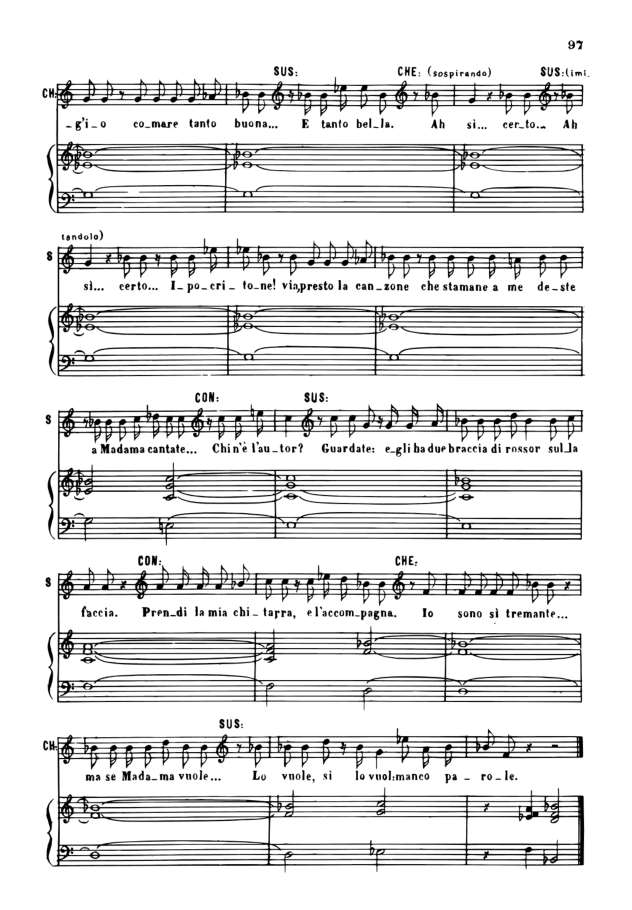</div>
    <div>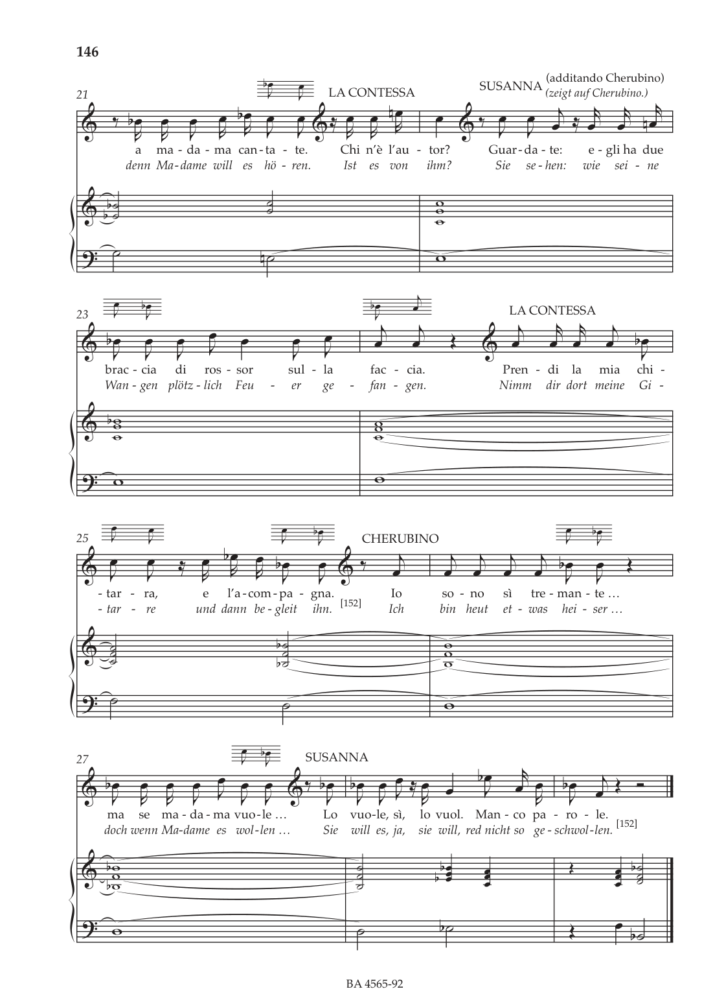</div>
    <figcaption><b>FIG. 1</b> The same recitative, before “Voi che sapete”, in two editions. <b>Left:</b> Ricordi, p. 97 (public domain scan). <b>Right:</b> Bärenreiter BA 4565, p. 146, bars 21–29, reproduced as a short excerpt for study.
      <ul style="margin:0.4em 0 0; padding-left:1.2em">
        <li><b>Shared staff:</b> both editions write the Countess, Susanna and Cherubino on one staff, naming each speaker above the notes. A per-staff character assignment can't separate them, which is a large part of why 13 of 233 speeches were never found on the scan route.</li>
        <li><b>Reading the names:</b> in the scan, the names (“SUS:”, “CHE:”, “CON:”) are pixels that OCR must read. In the Bärenreiter PDF they are text, in a known font at an exact position.</li>
        <li><b>Other differences:</b> Bärenreiter prints a German translation under the Italian, in italic, and the decoder ignores it by font. The small staves above the voice give the editors' suggested appoggiaturas.</li>
      </ul></figcaption>
  </figure>

  <h3><span class="n">4.3</span>Decoding a born-digital score (route B)</h3>
  <p>The Bärenreiter vocal score is a vector PDF set in Finale. Nothing in it needs recognising. Staff lines and barlines are drawn line segments. Every notehead, rest, clef, accidental and time signature is a character of the Maestro music font at an exact position. Lyrics, staff labels, bar numbers and tempo marks are real text, and fonts tell them apart:</p>
  <div class="tablewrap">
    <table>
      <thead><tr><th>Element</th><th>How it is found</th></tr></thead>
      <tbody>
        <tr><td>Staves, systems</td><td>Groups of five equally spaced horizontal lines; systems are staves joined at the left edge. Each staff's own left edge handles the indented first system.</td></tr>
        <tr><td>Barlines</td><td>Vertical segments at an x shared by <i>every</i> staff of the system. Requiring all staves is what keeps note stems from being counted as barlines.</td></tr>
        <tr><td>Notes</td><td>Maestro glyphs <code>œ ˙ w</code>; the glyph origin is the notehead centre. Pitch is the staff step from the clef's reference line (<code>&amp;</code> treble, <code>?</code> bass, <code>V</code> treble-8), plus key signature and any accidental (<code>b # n</code>) just before it.</td></tr>
        <tr><td>Rhythm</td><td>Bar number plus the note's horizontal position between the bar's lines. Engraved spacing grows with duration, which is approximate but enough for alignment.</td></tr>
        <tr><td>Lyrics</td><td>Palatino-Roman 9.2 pt below a staff is Italian; Palatino-Italic 9.2 is the German translation and is ignored. Each syllable attaches to the nearest notehead.</td></tr>
        <tr><td>Characters</td><td>Palatino-Roman 7.9 at the left margin of every system (“Sus.”, “La C.”, “Il C.”, “Fig.”…).</td></tr>
        <tr><td>Bar numbers, tempo</td><td>Palatino-Italic 9.0 numbers; Palatino-Bold tempo words (“Allegro”, “Molto andante”); time signatures as <code>c</code> or stacked digits.</td></tr>
      </tbody>
    </table>
  </div>
  <p>The decoder (<code>ba_vector.py</code>, 379 lines, using PyMuPDF, a Python library that lists every glyph, line and text run on a PDF page with its position) reads the whole finale (110 pages) in about 2 seconds. It produced:</p>
  <ul>
    <li>940 bars, agreeing with the printed bar number on every system;</li>
    <li>18,968 notes;</li>
    <li>8,813 Italian syllables;</li>
    <li>every staff labelled with its character;</li>
    <li>all ten tempo and metre changes.</li>
  </ul>
  <p>Every singer's range came out plausible: Susanna F4–A♭5, Figaro A2–E♭4. As a cross-check, Audiveris on rendered images of the same clean pages found 941 bars and agreed with itself on bar length in 74–79% of bars (24% on the Ricordi scan). So most of the OMR error came from the scan's quality, but even on a clean engraving OMR is not exact, and the decode is.</p>

  <h3><span class="n">4.4</span>Score time with a tempo</h3>
  <p>Routes A and B both hand the aligner a score in seconds. On route A every bar was read at a nominal 120 bpm. That made a <i>Molto andante</i> in 3/8 come out about three times too short against a 4/4 <i>Allegro</i>, and the alignment squeezed it: in both recordings “Che sbaglio mai presi” landed 15–30 s early. On route B each bar lasts what its printed tempo word and metre suggest, from one generic table (prestissimo 184 … allegro 132 … andante 76 … largo 50 bpm). The beat is the time signature's unit, except in compound metres and fast 3/8, where the dotted quarter is the beat. The alignment still absorbs the performers' own tempo. The table only prevents gross distortion.</p>

  <!-- 5 -->
  <h2 id="audio"><span class="n">5</span>Aligning score and recording</h2>
  <h3><span class="n">5.1</span>Features</h3>
  <p>Score and audio are compared in a shared feature space, using <code>synctoolbox</code>, an open-source Python toolbox for music synchronisation from the International Audio Laboratories Erlangen (Müller et al.):</p>
  <ul>
    <li><b>Chroma.</b> Every 20 ms (50 Hz), a filter bank measures the energy at each piano-key pitch from A0 to C8. The 88 values are folded into 12 pitch classes and quantised. The score side gets the same 12 values computed from its notes. Chroma ignores timbre and octave, so a piano reduction matches an orchestra reasonably well.</li>
    <li><b>DLNCO</b> (decaying locally adaptive normalised chroma onset) features mark where pitch-class energy <i>starts</i>. Chroma says which passage we are in; onsets sharpen the exact moment.</li>
    <li><b>CENS</b> (chroma energy normalised statistics) smooths chroma over about 2 s and downsamples it to 5 Hz. This gives a coarse, tempo-robust summary.</li>
    <li><b>Tuning:</b> estimated from the audio and compensated by shifting the filter bank. Solti came out 5 cents off A = 440. Currentzis came out −35 cents (about A = 431), and needed no special handling.</li>
  </ul>

  <h3><span class="n">5.2</span>Dynamic time warping</h3>
  <p>Dynamic time warping (DTW) finds the monotonic path through a cost matrix of feature distances that minimises total cost. The path maps each score frame to an audio frame. We use it in two stages.</p>
  <ol>
    <li><b>Coarse placement: subsequence DTW on CENS at 5 Hz.</b> A track may hold more than the score covers: Solti's Sextet track continues into two minutes of recitative. Subsequence DTW lets the score start and end anywhere in the track. Step sizes (1,1), (2,1) and (1,2) with weights 1, 2 and 2 limit the local tempo to between half and double. Without that constraint, a sparse OMR score once collapsed onto the last 46 s of the track.</li>
    <li><b>Fine alignment: memory-restricted multiscale DTW (MrMsDTW) at 50 Hz</b> on chroma plus DLNCO, over the excerpt the coarse stage found. Plain DTW needs a cost matrix of score frames × audio frames: 15 minutes against 15 minutes at 50 Hz is 2 billion cells. MrMsDTW (Prätzlich, Driedger and Müller, 2016) solves the problem at a low resolution first. It then refines the path at higher resolutions, computing only a narrow band around the previous path, and caps the memory each refinement may use. Memory and time stay near-linear for long pieces. The path is made strictly monotonic and interpolated, giving any score time an audio time.</li>
  </ol>
  <p>The MIDI's own tempo plays no part. Every point on the path is matched against the actual sound, so there is no cumulative drift. Errors stay local and the alignment recovers.</p>

  <figure>
    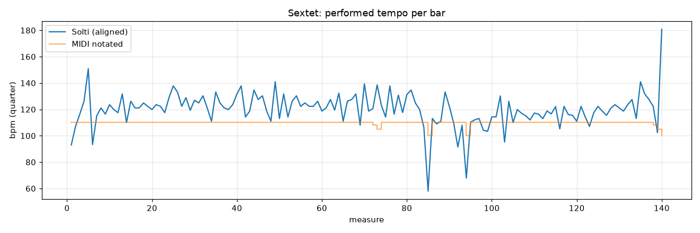
    <figcaption><b>FIG. 2</b> Solti's Sextet: tempo per bar implied by the alignment (blue), against the MIDI's notated tempo (orange). The median is about 121 bpm against 110 notated. The dips at bars 85 and 94 coincide with the ritardandi in the MIDI's tempo map, so they are musical, not errors. The spike at bar 140 is an artefact: the MIDI ends on the last note, not at the barline. This was the first evidence that the alignment tracked the performance.</figcaption>
  </figure>

  <h3><span class="n">5.3</span>Choosing the placement</h3>
  <p>The coarse stage can be wrong at the ends of the score. With Currentzis's very broad final ensemble, it placed the Sextet's end at 5:22 instead of 5:40, and the last 20 bars were squeezed. The fix is to try several candidate placements:</p>
  <ul>
    <li>the coarse result;</li>
    <li>“to the end of the music” (the last audio at least −30 dB re peak);</li>
    <li>“the whole track”.</li>
  </ul>
  <p>Each candidate is fine-aligned and then judged on two measures:</p>
  <ul>
    <li><b>Harmonic fit:</b> the mean of score CENS · audio CENS along the path. This vetoes placements that spread the score over music it doesn't contain.</li>
    <li><b>Singing agreement</b> (§10) then decides, and must beat the coarse placement by more than a point.</li>
  </ul>
  <p>Singing agreement alone picked wrongly for Solti: it stretched the Sextet over the following recitative and scored 77.8% against 77.1%. Harmonic fit caught it (0.719 against 0.746).</p>

  <h3><span class="n">5.4</span>Multi-track numbers</h3>
  <p>The finale spans three tracks for Solti and seven for Currentzis. Each recording's tracks are joined into one continuous timeline, with their offsets recorded. The whole score is aligned against that timeline, and the timed lines are split back into tracks by start time. A second pass rescales each tempo section by the factor the first pass found (clipped to 0.5–4×) and aligns again. That helped on the scan route. On route B the printed tempos made it mostly unnecessary.</p>

  <!-- 6 -->
  <h2 id="voice"><span class="n">6</span>The vocal track</h2>
  <p><b>Source separation.</b> Demucs is Meta AI's open-source neural network for separating the instruments of a music recording. We use <code>htdemucs</code>, its hybrid transformer version, which works on both the waveform and the spectrogram. In two-stem mode it splits a recording into “vocals” and “everything else”. All the singers end up together in one vocal stem. No current tool reliably separates individual singers. The Sextet's stem took 46 s to compute. The listener's verdict: “The extraction sound very good.”</p>
  <p>The stem gives us three signals:</p>
  <ul>
    <li><b>Loudness.</b> The RMS (root-mean-square) level in decibels (dB), median-filtered over 9 frames. A frame counts as sung above −24 dB; sung frames have a median of −16 dB and silent ones −32 dB.</li>
    <li><b>Pitch.</b> pYIN (probabilistic YIN, Mauch and Dixon 2014), as implemented in the <code>librosa</code> audio library. It runs from 65 to 1050 Hz at 16 kHz, in 20 ms frames.
      <ul>
        <li>YIN (de Cheveigné and Kawahara 2002; the name is from yin and yang, not an acronym) estimates the period of a sound. It finds the lag at which the signal best matches a delayed copy of itself.</li>
        <li>pYIN keeps several candidate periods per frame and picks a smooth sequence with a hidden Markov model. It also gives the probability that the frame is voiced.</li>
      </ul>
      The result is an f0 (fundamental frequency, the sung pitch) track wherever one voice dominates. Its voicing probability was useless for detecting singing when several voices sound (median 0.06), which is why loudness is used for that.</li>
    <li><b>Silences.</b> Stretches of at least 1 s below −30 dB. Lines that run into a clear silence are trimmed out of it (§7.3).</li>
  </ul>

  <figure>
    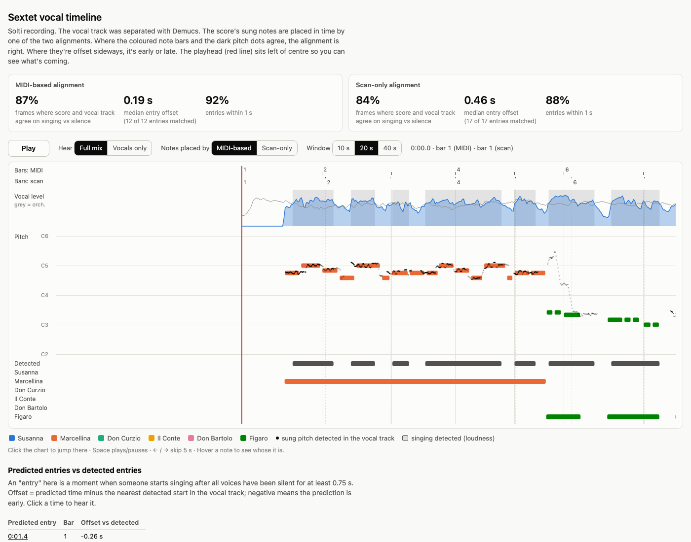
    <figcaption><b>FIG. 3</b> The diagnostic timeline (<code>phase6_timeline.py</code> → <code>out/timeline/index.html</code>), at the Sextet's opening. The view scrolls past a fixed red playhead while the recording plays, through either the full mix or the vocal stem. From the top: bar lines from the MIDI-based and scan-only alignments; the vocal stem's loudness (blue) over the orchestra's (grey), with detected singing shaded; the score's sung notes placed by the alignment and coloured by character, overlaid with the pitch pYIN hears (black dots); then rows for detected singing and for each character. Where coloured notes and black dots coincide, the alignment is right. The tiles summarise the agreement measures from §10.</figcaption>
  </figure>
  <figure>
    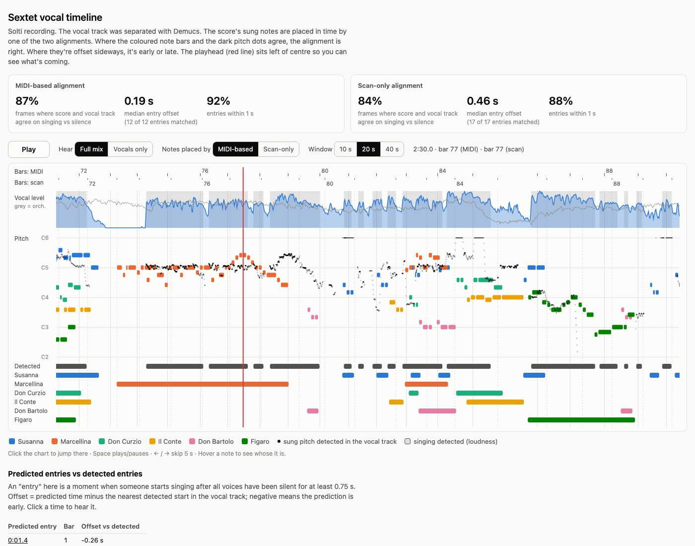
    <figcaption><b>FIG. 4</b> The same page at 2:30 (bar 77), in an ensemble stretch. Pitch dots follow whichever voice dominates the stem, here Marcellina's held line. Seeing this map of who sings when prompted the remark that “we could easily get text in the right place from it”, which led to the display work in §9.</figcaption>
  </figure>

  <!-- 7 -->
  <h2 id="text"><span class="n">7</span>Text, gloss and lines</h2>
  <h3><span class="n">7.1</span>The reference text</h3>
  <p>For each passage we wrote each character's sung text once, as the score has it, split into short phrases, each with a literal English gloss (<code>sextet_text.py</code>, <code>finale2_text.py</code> and others). Example: <i>Riconosci / in questo amplesso / una madre, / amato figlio!</i> → <i>Recognize / in this embrace / a mother, / beloved son!</i> Repeats are not written out. Per-singer variants are resolved into each singer's own words: <i>confusa</i> for Susanna, <i>confuso</i> for Figaro. Today this is the largest manual step (§13).</p>

  <h3><span class="n">7.2</span>Cleaning the score's text: a letter DP with jumps back</h3>
  <p>The score reading decides <i>what is sung when, and how often</i>. The reference supplies clean spelling and the gloss. For each character, all syllables read from the score are concatenated into one letter stream in time order. That stream is aligned to the character's reference text by a local-alignment dynamic programme (DP, §4.2), a variant of Smith-Waterman, with four moves:</p>
  <ul>
    <li>match (+2) or mismatch (−1);</li>
    <li>skip an OCR letter as junk (−1);</li>
    <li>skip a reference letter (−1);</li>
    <li>a <b>jump back</b> to any phrase start (−5). This lets the alignment follow a singer who repeats a phrase.</li>
  </ul>
  <p>A word counts as found if 60% of its letters match. Up to four reference words the reading skipped between two matched words are filled in. Performance directions read as text (“sotto voce”) are dropped. Each gloss phrase takes the time span of its matched syllables, so a phrase can be lit exactly while it is sung.</p>
  <p>Letter match against the reference was 92–97% for the Sextet's typeset OCR, 82–89% for the Ricordi scan, and 99–100% for the Bärenreiter decode. On route B the score's own Italian is already right, and the reference serves only the gloss and the verse structure.</p>

  <h3><span class="n">7.3</span>Lines, trimming and phrase caps</h3>
  <p>Syllables become lines at rests, at punctuation, or after a length limit:</p>
  <ul>
    <li>Sextet: a rest of a quarter or more, or 9 words.</li>
    <li>Bärenreiter: a 0.6 s gap in score time, or 20 syllables.</li>
  </ul>
  <p>Three corrections then run on the timed lines:</p>
  <ul>
    <li><b>Melisma extension.</b> A melisma is a single syllable sung across several notes, such as a long run on one vowel. The score prints the syllable under the first note only. So a note without a syllable, following a sung one, extends that syllable. Without this, “che a te lo dirà” lost its end.</li>
    <li><b>Silence trimming.</b> A line whose start falls in a clear silence (at least 1 s under −30 dB) moves to the silence's end. A line running into one ends where the silence begins. A first version used the looser “not singing” level and would have cut the Count's quiet <i>sotto voce</i> “Al fiero tormento” by 2.6 s.</li>
    <li><b>Phrase cap.</b> Filled-in phrases have no timing of their own, and on the scan route they had stretched across whole gaps, producing 20–30 s lines. A cap of 4 s, and splitting lines at gaps of 2 s, fixed that.</li>
  </ul>

  <!-- 8 -->
  <h2 id="recit"><span class="n">8</span>Recitative: aligning text, not notes</h2>
  <p>Recitativo secco is close to speech: one voice at a time, speaking rhythm, sparse continuo. A score alignment has little harmonic material to hold, so route C aligns the <i>text</i> to the vocal stem instead. This is <b>forced alignment</b>: the words are known, and only their times are sought. That is a much easier problem than speech recognition.</p>
  <p>We use <code>MMS_FA</code>, packaged in torchaudio, PyTorch's audio library. It is the forced-alignment model from Meta's MMS (Massively Multilingual Speech) project, trained on read speech in over a thousand languages, Italian among them. Its parts:</p>
  <ul>
    <li><b>wav2vec2:</b> a speech network that learns its own representation of raw audio before it is trained to recognise characters.</li>
    <li><b>CTC (connectionist temporal classification):</b> a training method that lets a network emit character probabilities frame by frame without being told where each character falls.</li>
  </ul>
  <p>How we use it:</p>
  <ul>
    <li>It emits, every 20 ms, a probability for each character. The best monotonic path through those emissions that spells out the text gives each word's start and end.</li>
    <li>A <b>wildcard token</b> (<code>*</code>) between speeches absorbs anything not in the text: continuo, orchestral passages and pauses. The model runs over 30 s windows with 2 s overlap.</li>
    <li>Words in ensembles get low confidence (“schiatti” 0.07), as expected. Solo words are confident.</li>
  </ul>
  <p>The same tool timed an aria, “Voi che sapete”, once its two-strophe text was written out with repeats as sung.</p>
  <figure>
    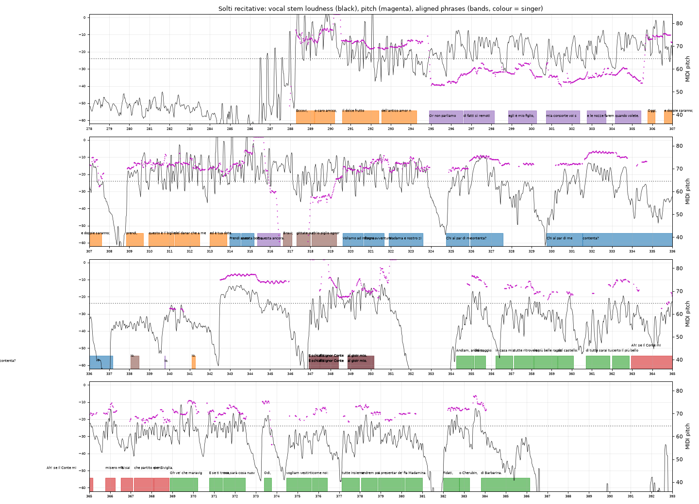
    <figcaption><b>FIG. 5</b> Route C on Solti's recitative after the Sextet: vocal-stem loudness (black), pitch (magenta) and the aligned speeches (bands, one colour per singer). Every change of speaker falls on a pause or a change of register. That is an independent sign that the speaker turns are right, since the aligner sees neither pitch nor speakers.</figcaption>
  </figure>
  <figure>
    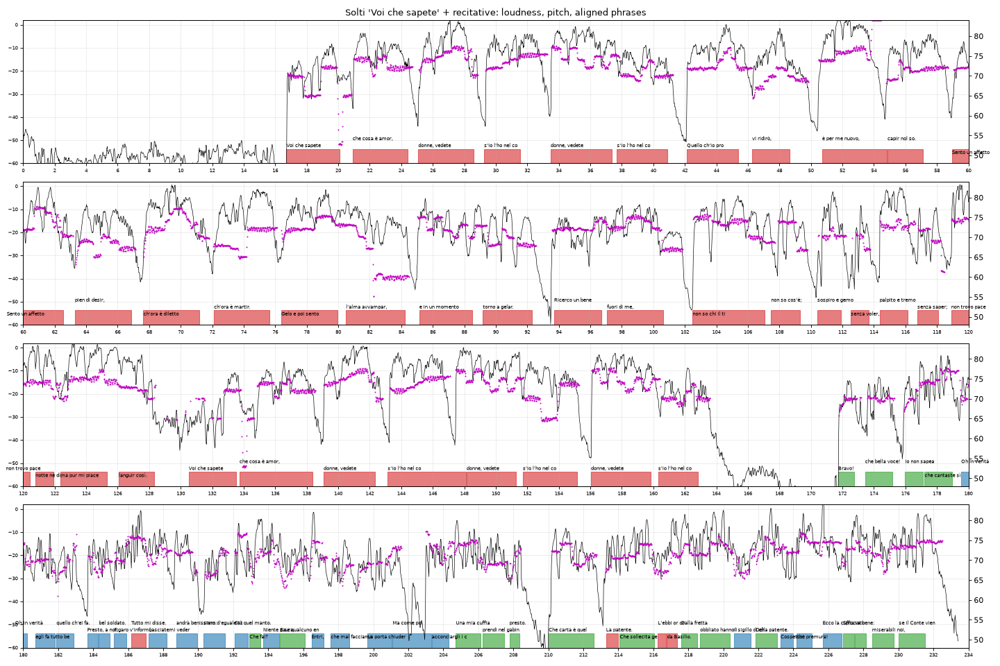
    <figcaption><b>FIG. 6</b> “Voi che sapete” and the recitative “Bravo! che bella voce!” (Solti), timed by route C. The reprise of “Voi che sapete” is found at 130.5 s against 16.7 s for the opening. Its sung pitch contour matches the opening to within 0.16 semitones, against 1.60 for a control shifted by 4 s (Currentzis: 0.28 against 1.47). About 2% of words fall mostly in silence.</figcaption>
  </figure>

  <!-- 9 -->
  <h2 id="viewer"><span class="n">9</span>The viewer</h2>
  <p>The display lives in roon-rd, a small Rust server that follows Roon zones. Its <code>/libretto-view</code> page receives each zone's now-playing track and position over a WebSocket, a connection the server keeps open to push updates to the browser. (Roon is the music-library and playback system the recordings are played in; a zone is one of its playback outputs.) The server matches the track to an interchange file by album, title structure, disc and track number, and track length. The page then renders the matched segments.</p>
  <p>Three timing details mattered more than expected:</p>
  <ul>
    <li><b>Smoothing.</b> Roon reports position in whole seconds, about once a second. A report of N means the true position lies in [N, N+1). The page keeps its own running estimate while that stays inside the reported second, re-anchors at N + 0.5 otherwise, and never runs more than 2 s past the last report. Before this, lines changed up to a second late and felt “jumpy”.</li>
    <li><b>Lead.</b> Each line is shown 0.7 s before it is sung (adjustable with <code>?lead=</code>), so the reader keeps up.</li>
    <li><b>Zone following.</b> With four Roon zones, the page follows the one playing a track that has a libretto, and stays on it while paused.</li>
  </ul>

  <figure class="pair">
    <div>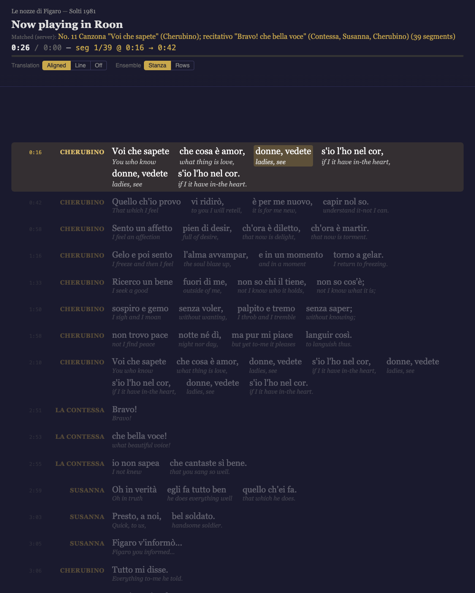</div>
    <div>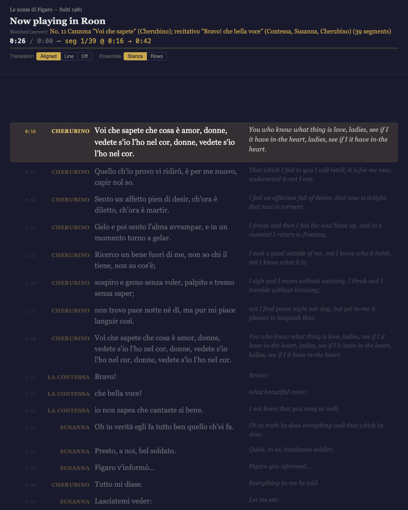</div>
    <figcaption><b>FIG. 7</b> “Voi che sapete” at 0:26 (Solti). Left, <i>Aligned</i>: each Italian phrase sits above its literal gloss, and the phrase being sung is lit (<span class="lit">donne, vedete</span>). Right, <i>Line</i>: the Italian line, then the English line. The listener tested both: “The longer line length for the highlight works quite well.”</figcaption>
  </figure>

  <h3><span class="n">9.1</span>Ensembles: cards, stanzas and rows</h3>
  <p>Solo lines scroll like song lyrics. When two or more voices overlap for at least 0.5 s, a passage starts, and it runs until 0.5 s after the last overlap. Overlaps less than 2.5 s apart join into one passage. The passage is drawn as a <b>card</b> in the scrolling list, with one row per character in score order. Two styles were built:</p>
  <ul>
    <li><b>Stanza:</b> each character's text for the whole passage is shown once and stays fixed. The phrases being sung are lit, so repeats move the highlight instead of the text.</li>
    <li><b>Rows:</b> each character's most recent lines.</li>
  </ul>
  <p>Stanza was preferred. In the listener's words: “There is something very valuable … by the static text capturing the repetitions, and the highlights skipping around the text as they are sung … you begin to wonder how much Mozart is thinking about the structure.” About half the sung words in the Sextet's final passage are repeats (312 sung, about 205 distinct).</p>

  <figure class="pair">
    <div>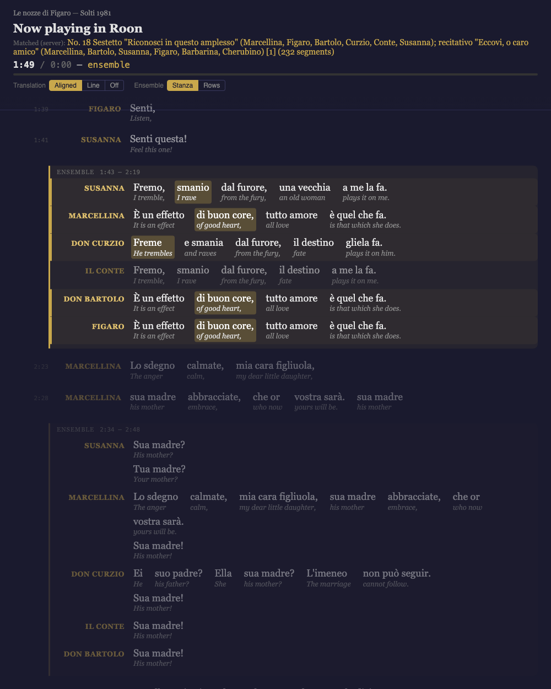</div>
    <div>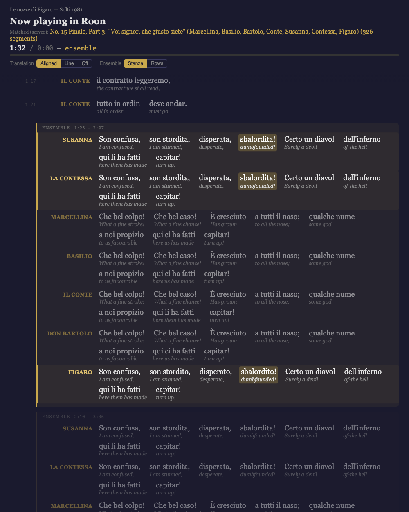</div>
    <figcaption><b>FIG. 8</b> Ensemble cards in Stanza style. Left: the Sextet at 1:49, with five of six voices singing; the Count is between phrases and dimmed. Right: the end of the Act II finale (Bärenreiter route), seven voices. Susanna, the Countess and Figaro sing <span class="lit">sbalordita / sbalordito</span> against the other four's “Che bel colpo!”. The gloss keeps each singer's grammatical gender.</figcaption>
  </figure>
  <figure class="narrow">
    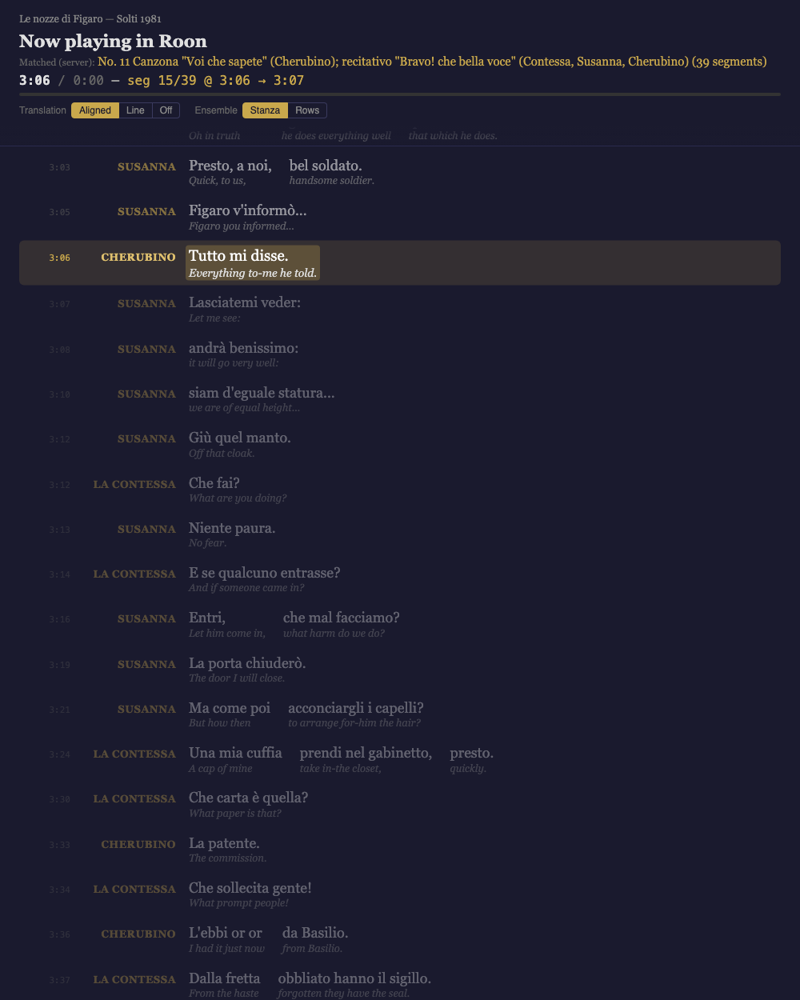
    <figcaption><b>FIG. 9</b> Recitative “Bravo! che bella voce!” at 3:06 (Solti, route C): quick exchanges between the Countess, Susanna and Cherubino, each line within a second or two of the next.</figcaption>
  </figure>

  <h3><span class="n">9.2</span>The every-line-accounted check</h3>
  <p>Card boundaries are easy to get subtly wrong. One version skipped the Sextet's last ensemble entirely, and another hid Susanna's line that started half a second before an overlap ended. So every change to the card rules is followed by an automatic check in headless Chrome:</p>
  <ol>
    <li>The served page is loaded with its WebSocket removed and a track's segments injected.</li>
    <li>Each line is classified as listed, in a card, or absorbed into a card's lead-in. A line in none of these is missing; a line both listed and in a card is shown twice.</li>
    <li>The script steps the clock in 0.25 s increments and records which phrases are lit. Any lit phrase not being sung at that moment is flagged, as is any sung phrase left unlit.</li>
  </ol>
  <p>Every track passes. For the finale: missing 0 and shown twice 0, on all ten tracks. For phrase lighting in solo lines: 0 unexplained, 0 sung but unlit.</p>

  <!-- 10 -->
  <h2 id="eval"><span class="n">10</span>Evaluating without ground truth</h2>
  <p>There is no hand-marked truth to score against, and making one would contradict the design. Early on we treated the MIDI-based alignment as truth. The user pointed out that it is just another estimate (“more like comparing two different recordings”). A table of their differences shows disagreement, not the error of either. Instead, each timed passage is judged by measures computed from the audio alone, independent of the aligner:</p>
  <div class="tablewrap">
    <table>
      <thead><tr><th>Measure</th><th>Definition</th><th>Catches</th></tr></thead>
      <tbody>
        <tr><td>Singing agreement</td><td>Share of frames where “the score says someone sings” agrees with “the vocal stem is loud”</td><td>Slid or stretched alignment</td></tr>
        <tr><td>Entries after silence</td><td>For each predicted entry after ≥0.75 s with all voices silent: offset to the nearest detected singing onset. Reported as the median |offset| and the share within 1 s</td><td>Timing error at the moments a listener notices most</td></tr>
        <tr><td>Harmonic fit</td><td>Mean CENS similarity along the path</td><td>Score spread over the wrong music, cut sections</td></tr>
        <tr><td>Text match</td><td>Share of score letters matching the reference (§7.2)</td><td>Wrong staff → character, bad reading</td></tr>
        <tr><td>Words in silence</td><td>Share of aligned words or phrases lying mostly in silence</td><td>Forced-alignment errors</td></tr>
        <tr><td>Register</td><td>Each solo speech's median pitch: men below 0.75 × the women's median</td><td>Wrong speaker turns</td></tr>
        <tr><td>Reprise contour</td><td>Pitch-contour DTW of a reprise against its first statement, with a time-shifted control</td><td>Gross misplacement in strophic arias</td></tr>
        <tr><td>Every line accounted</td><td>§9.2</td><td>Display logic losing or duplicating lines</td></tr>
      </tbody>
    </table>
  </div>
  <p>Above all of these sits listening. Every build was watched in Roon by the user, and their verdicts are quoted in §11. The checks exist to decide <i>where</i> to listen when there are thirty numbers per opera.</p>

  <h3><span class="n">10.1</span>Exact definitions of the reported measures</h3>
  <p>The result tables in §11 report the measures below. All audio measures use 20 ms frames of the vocal stem at 16 kHz. Where a table cell shows two values, such as “83% / 88%”, they are Solti / Currentzis.</p>
  <p>Two signals are compared frame by frame.</p>
  <ul>
    <li><b>“The score says someone sings”</b> (predicted). Every gloss phrase of every character is placed in audio time by the alignment. The phrases of all characters are merged into spans, bridging any gap shorter than 0.75 s. A frame is predicted-singing if it lies inside a span.</li>
    <li><b>“The stem says someone sings”</b> (detected). The vocal stem's RMS level is taken in dB relative to a loud reference: the 99.5th percentile of both stems' levels. It is median-filtered over 9 frames (0.18 s) and thresholded at −24 dB. Gaps shorter than about 0.25 s are bridged, and blips shorter than about 0.2 s are dropped. A frame is detected-singing if it lies inside a resulting span.</li>
  </ul>
  <p>On the Sextet, frames under sung notes had a median of −16 dB and silent frames −32 dB, which put the −24 dB threshold between them.</p>
  <dl class="params">
    <dt>Singing agreement</dt><dd>The share of frames on which the two signals agree: both say singing, or both say silent. Frames are counted over the passage, from the first to the last moment the full mix is within 30 dB of its peak. A perfect alignment still scores below 100%:
      <ul>
        <li>the two signals bridge gaps differently (0.75 s against 0.25 s);</li>
        <li>very quiet singing falls under −24 dB;</li>
        <li>orchestral bleed into the stem reads as singing.</li>
      </ul>
      The measure is best used to compare alignments of the <i>same</i> passage. Across passages, its level depends on how much of the passage is sung.</dd>
    <dt>Entry</dt><dd>A <i>predicted entry</i> is the start of a predicted span: a moment where, after at least 0.75 s with no voice in the score, some voice begins. A <i>detected entry</i> is the start of a detected span.</dd>
    <dt>Entry offset</dt><dd>For each predicted entry: its time minus the nearest detected entry's time. A negative offset means the line is predicted early. The entry is <i>matched</i> if that offset is within ±3 s. Otherwise it is counted as unmatched and left out of the two figures below.</dd>
    <dt>Entries: median offset</dt><dd>The median of |offset| over the matched entries, in seconds. It is the typical timing error at the moments a listener most notices. Values near 0.1 s are at the limit of what the detection can resolve, given its smoothing.</dd>
    <dt>Entries within 1 s</dt><dd>The share of matched entries with |offset| ≤ 1 s. It is given either as a percentage or as a count, such as “11 / 12”: 11 of 12 matched entries within 1 s. A passage has few entries after silence: 12–19 in the Sextet, more in the finale. One entry can therefore move this figure by 5–8 points in the Sextet.</dd>
    <dt>Found</dt><dd>“19 / 19 found” means all 19 predicted entries were matched within 3 s.</dd>
    <dt>Score text letters matching the reference</dt><dd>From the letter DP (§7.2): the share of the letters read from the score (OCR or vector decode) that align as matches to the character's reference text. It is computed per character, and a range such as “82–89%” spans the characters. It depends only on the score, not on the recording.</dd>
    <dt>Speeches never found</dt><dd>A speech is one verse of the reference text. It is <i>never found</i> if none of its phrases was matched anywhere in that character's score text. The finale has 233 speeches across its eight characters.</dd>
    <dt>Time to read the score</dt><dd>Wall-clock time to turn the PDF into notes and syllables: Audiveris per page per run, or the vector decoder for the whole passage.</dd>
    <dt>Words in silence (route C)</dt><dd>The share of aligned phrases (or words) for which less than half of their span is detected-singing. A well-aligned phrase sits on singing; one placed in a pause scores near zero.</dd>
    <dt>Register check (route C)</dt><dd>For each solo speech, the median pYIN pitch. It <i>passes</i> if every male character's speech lies below 0.75 × the median of the women's speeches. A wrong speaker turn between a man and a woman usually breaks this. Turns between two women, or between two men, are not tested.</dd>
  </dl>

  <!-- 11 -->
  <h2 id="results"><span class="n">11</span>Experiments and results</h2>
  <p>The work ran as a sequence of phases, each answering one question. The dates are local time.</p>

  <h3><span class="n">11.1</span>Can a recording be aligned to a score at all? (4 Nov)</h3>
  <p>The Sextet MIDI was aligned to Solti's track. The coarse stage placed the Sextet at 0.4–283.6 s of the 393 s track; the rest is recitative. A click track mixed over the recording (high click on downbeats) was the first listening test.</p>
  <blockquote>This is pretty impressive. I don't think it's perfect, but in the places where it's late, early, slightly confused it rights itself pretty quick.<span class="who">listener, 4 Nov</span></blockquote>

  <h3><span class="n">11.2</span>Can a score from OMR replace the MIDI? (5 Nov)</h3>
  <p>As run, no. The Ricordi scan read 144 bars for 140. The typeset score drifted 0.5–1.5 s late after bar 45. Its onset strength at predicted beats (1.76) was no better than a half-beat-shifted baseline (1.77).</p>
  <p>Part of that failure was our own loader. Tied notes weren't merged and the horns in F weren't transposed. With both fixed, typeset-scan bar times agreed with the MIDI-based ones to a median of 0.42 s, with 94% within 1 s and all within 2 s. A click track timed from the typeset score alone was “a bit of a mess in bars 80–140. However, it may work anyway.”</p>

  <h3><span class="n">11.3</span>First display, and what went wrong (5–6 Nov)</h3>
  <p>The first end-to-end build put OCR'd lyrics from the score on screen in time. It looked “pretty jumpy … By the end things were pretty off”, about 2–3 s late in the last 40 bars. Two causes:</p>
  <ul>
    <li>the OCR run's part splitting (§4.1);</li>
    <li>the page's whole-second position updates.</li>
  </ul>
  <p>The fixes were notes from the plain run, smoothing, and the 0.7 s lead.</p>
  <blockquote>This is very impressive. Lines land quite well.<span class="who">listener, 6 Nov</span></blockquote>

  <h3><span class="n">11.4</span>Seeing the voices (6 Nov)</h3>
  <p>Demucs and the timeline page (Figures 3–4) made the alignment visible. They also replaced the MIDI as the yardstick with the audio-only measures:</p>
  <div class="tablewrap">
    <table>
      <thead><tr><th>Sextet, Solti</th><th class="num">singing agreement</th><th class="num">entries: median offset</th><th class="num">entries within 1 s</th></tr></thead>
      <tbody>
        <tr><td>MIDI-based alignment</td><td class="num">87%</td><td class="num">0.19 s</td><td class="num">11 / 12</td></tr>
        <tr><td>Scan-only alignment</td><td class="num">84%</td><td class="num">0.46 s</td><td class="num">15 / 17</td></tr>
      </tbody>
      <caption>Measures as defined in §10.1. “Entries within 1 s” is a count: matched entries within 1 s, out of matched entries.</caption>
    </table>
  </div>
  <p>A census of the Sextet's 161 phrase starts found 20 after silence, 27 hand-overs between voices, and 114 joins into an already-singing texture. The listener's complaint that “the downbeat gets lost immediately upon a new voice coming in” is a statement about the joins. They are the hardest case for any audio-based check.</p>

  <h3><span class="n">11.5</span>Text, gloss and ensembles (6 Nov)</h3>
  <p>With the reference text, the letter DP, the gloss and the Stanza view in place:</p>
  <blockquote>That is amazing. I'm almost speechless.<span class="who">listener, 6 Nov</span></blockquote>
  <p>Cards in the list replaced a header panel that changed “so fast it's hard to follow”. After two boundary bugs were fixed: “It just incredible. That was perfect.”</p>

  <h3><span class="n">11.6</span>A second recording, with no extra work (6–7 Nov)</h3>
  <p>The Currentzis Sextet was timed from the same prepared text. Matching, placement and tuning were all automatic. It was “perfect, right up to about 3:40”, where the broad final ensemble exposed the placement problem fixed in §5.3. After that fix:</p>
  <div class="tablewrap">
    <table>
      <thead><tr><th>Sextet</th><th class="num">singing agreement</th><th class="num">entries: median</th><th class="num">within 1 s</th></tr></thead>
      <tbody>
        <tr><td>Solti</td><td class="num">85%</td><td class="num">0.42 s</td><td class="num">82%</td></tr>
        <tr><td>Currentzis</td><td class="num">85%</td><td class="num">0.35 s</td><td class="num">89% (19 / 19 found)</td></tr>
      </tbody>
      <caption>Measures as defined in §10.1. “Entries: median” is the median |offset| of matched entries after silence. “19 / 19 found” means every predicted entry had a detected entry within 3 s.</caption>
    </table>
  </div>
  <p>Two follow-up fixes came on 7 Nov:</p>
  <ul>
    <li><b>Phrase-level times:</b> lit-but-not-sung time across both recordings fell from about 30 minutes to about 4.</li>
    <li><b>The lead-in to the last ensemble:</b> melisma extension plus silence trimming. It cut 11–12 line ends and moved 5–6 starts per recording, and reduced 220 lines to 202. Verdict: “That's the best yet.”</li>
  </ul>
  <figure>
    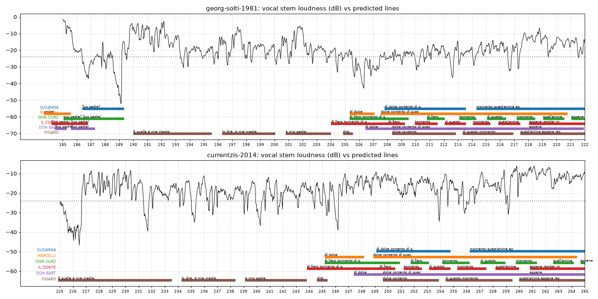
    <figcaption><b>FIG. 10</b> Diagnosing the lead-in to the Sextet's last ensemble, around bar 94: vocal-stem loudness against the predicted lines per character, for both recordings. Currentzis holds a long silent pause where the score has three characters singing. Lines that ran across such silences were the visible symptom; trimming them out of clear silences fixed it.</figcaption>
  </figure>

  <h3><span class="n">11.7</span>Recitative and aria (7 Nov)</h3>
  <p>Route C on both recordings: the Sextet's recitative, then “Voi che sapete” with “Bravo! che bella voce!” from the full albums. 5 of 95 recitative words in Currentzis lay mostly in silence. For the aria, see Figure 6. Verdicts: “Yeah, that worked.” and “This works.”</p>

  <h3><span class="n">11.8</span>The Act II finale: scan versus born-digital (7–8 Nov)</h3>
  <p>The finale was the hardest test: 940 bars, ten tempo and metre changes, 2–8 voices, and ten tracks across the two recordings. The scan route needed the shared bar grid, the cast-order DP, the on-stage penalty, the phrase caps and the two-pass tempo rescaling, and it was still the weakest result so far. The Bärenreiter decode, with the rest of the pipeline unchanged, removed most of the error:</p>
  <div class="tablewrap">
    <table>
      <thead><tr><th>Act II finale</th><th class="num">Ricordi scan + Audiveris</th><th class="num">Bärenreiter vector decode</th></tr></thead>
      <tbody>
        <tr><td>Score text letters matching the reference</td><td class="num"><span class="worst">82–89%</span></td><td class="num"><span class="best">99–100%</span></td></tr>
        <tr><td>Speeches never found</td><td class="num"><span class="worst">13 / 233</span></td><td class="num"><span class="best">0 / 233</span></td></tr>
        <tr><td>Singing agreement, Solti / Currentzis</td><td class="num">70% / 74%</td><td class="num"><span class="best">83% / 88%</span></td></tr>
        <tr><td>Entries after silence: median offset</td><td class="num">0.63 / 0.60 s</td><td class="num"><span class="best">0.10 / 0.07 s</span></td></tr>
        <tr><td>Entries within 1 s</td><td class="num">62% / 74%</td><td class="num"><span class="best">91% / 95%</span></td></tr>
        <tr><td>Time to read the score</td><td class="num">≈1 min per page per run</td><td class="num">2 s for 110 pages</td></tr>
      </tbody>
      <caption>Measures as defined in §10.1. Paired values are Solti / Currentzis. Text and speech figures depend only on the score.</caption>
    </table>
  </div>
  <blockquote>Yeah. That really worked. The entire Act II finale you did was near perfect.<span class="who">listener, 8 Nov</span></blockquote>

  <h3><span class="n">11.9</span>Summary by route</h3>
  <div class="tablewrap">
    <table>
      <thead><tr><th></th><th class="num">A: Sextet (typeset)</th><th class="num">A: finale (scan)</th><th class="num">B: finale (vector)</th><th class="num">C: recitatives, aria</th></tr></thead>
      <tbody>
        <tr><td>Text matching reference</td><td class="num">92–97%</td><td class="num">82–89%</td><td class="num">99–100%</td><td class="num">n/a</td></tr>
        <tr><td>Singing agreement</td><td class="num">85% / 85%</td><td class="num">70% / 74%</td><td class="num">83% / 88%</td><td class="num">n/a</td></tr>
        <tr><td>Entries: median offset</td><td class="num">0.42 / 0.35 s</td><td class="num">0.63 / 0.60 s</td><td class="num">0.10 / 0.07 s</td><td class="num">words in silence 0–5%</td></tr>
        <tr><td>Entries within 1 s</td><td class="num">82% / 89%</td><td class="num">62% / 74%</td><td class="num">91% / 95%</td><td class="num">register check passes</td></tr>
      </tbody>
      <caption>Figures are Solti / Currentzis; each measure is defined in §10.1. Route C has no score to compare against, so it is judged by its own two checks: words in silence and the register check. Route B is best by a clear margin, and it is also the only route that knows the real bar numbers and tempo marks.</caption>
    </table>
  </div>

  <!-- 12 -->
  <h2 id="negative"><span class="n">12</span>What didn't work</h2>
  <ul>
    <li><b>The IMSLP Finale archive.</b> It contained only Finale 2007 <code>.mus</code> files, which nothing free can open. The same engraver's MIDI was used instead.</li>
    <li><b>Anchor snapping (phase 7).</b> We detected entries after silence and register hand-overs in the vocal stem, then corrected the alignment toward them. 41 candidates, 32 found, 24 kept. Leave-one-out error got worse (0.44 s against 0.25 s), because the plain alignment is already as precise as the detection of where singing starts. It was switched off and is not to be revisited.</li>
    <li><b>Nearest-barline comparison.</b> An early metric compared each bar to its nearest reference barline. It is capped at half a bar and hid the drift. Direct bar-by-bar comparison replaced it.</li>
    <li><b>pYIN voicing for singing detection.</b> Useless with several voices (above). Loudness replaced it.</li>
    <li><b>Phrase-level character reassignment by text</b> on the scan route. This tried to separate speakers sharing a staff. It was mostly noise, even when tightened to 8 letters and a 0.3 margin.</li>
    <li><b>A per-minute register check</b> for long ensembles (<code>finale2_check.py</code>). Few lines are sung alone in a finale, and pYIN on the Solti stem often jumps to its upper limit. It is a weak signal, kept only as a diagnostic.</li>
    <li><b>Two-pass tempo rescaling on the scan.</b> It helped only partly, because the first pass is already wrong exactly where rescaling is needed. The printed tempo marks solved it properly.</li>
    <li><b>Merging barline clusters</b> within 5 pt in the vector decode. It made bar counts worse and was reverted to 2 pt.</li>
  </ul>
  <p>Bugs that taught something:</p>
  <ul>
    <li>A negative corner radius for very short notes threw an exception inside the timeline's animation loop, and the playhead froze at bar 8.</li>
    <li>The viewer showed Solti's text while Currentzis played, because both albums had the same name. The fix was matching on track length, then on Roon's own album title.</li>
    <li><code>synctoolbox</code> silently adds a column to the caller's note table, and a second call then failed.</li>
  </ul>

  <!-- 13 -->
  <h2 id="hand"><span class="n">13</span>Hand tooling</h2>
  <p>Everything below was done by a person (the user, or Claude in a session) rather than by a tool that could run unattended. It is the work the production pipeline has to absorb or remove.</p>
  <div class="tablewrap wide">
    <table>
      <thead><tr><th>Manual step</th><th>Why it was needed</th><th>How it goes away</th></tr></thead>
      <tbody>
        <tr><td><b>Writing the reference text and gloss</b> per passage: <code>sextet_text.py</code>, <code>recit_text.py</code>, <code>act2_text.py</code>, <code>finale2_text.py</code> (8 characters, ≈250 phrases)</td><td>The OCR needed a spelling reference; a literal gloss needed writing</td><td>Route B gives the Italian exactly. A large language model (LLM) pass splits it into phrases and writes the gloss, judged by automatic checks plus a human read of a sample</td></tr>
        <tr><td><b>Finding and downloading scores</b>: IMSLP files fetched by the user in a browser; the Bärenreiter PDF bought</td><td>IMSLP's download page is interactive; licensed editions are bought</td><td>A per-opera input. Check fonts automatically on arrival</td></tr>
        <tr><td><b>Locating passages in the score by eye</b>: contact sheets of page tops, side-by-side page images at boundaries, an off-by-one corrected for the finale</td><td>Scans have no text layer</td><td>Route B: number headings and bar numbers are text. Scans: a vision pass per page (as an earlier <code>page_descriptions.json</code> did)</td></tr>
        <tr><td><b>Cutting PDFs to page ranges</b>, and into halves for parallel OMR runs</td><td>Audiveris is slow (≈1 min per page per run)</td><td>Automatic split from the page map; unnecessary on route B</td></tr>
        <tr><td><b>Audiveris setup</b>: clearing macOS quarantine, Tesseract <code>ita</code>/<code>eng</code> data, the language constant, skipping the title page</td><td>Silent failures otherwise</td><td>A setup script. Route B drops Audiveris from the Figaro build</td></tr>
        <tr><td><b>A transposition table</b> (horns in F)</td><td>OMR doesn't know instruments</td><td>Irrelevant for vocal scores; a label table if a full score is ever used</td></tr>
        <tr><td><b>Per-passage tables in code</b>: cast and score order, label prefixes, staff indices, pages on stage, male voices, tempo-word table</td><td>Each number differs</td><td>A per-opera manifest generated from the score's labels and cast list, corrected only by exception</td></tr>
        <tr><td><b>Choosing tracks</b> and typing titles, disc and track numbers into commands or a <code>RECORDINGS</code> table</td><td>No track-to-number map; Roon's titles differ from file tags</td><td>Read tags and Roon's titles; place numbers in score order across an act (§15)</td></tr>
        <tr><td><b>Recitative region starts</b> given by hand (e.g. 278 s into Solti's Sextet track), and which texts a track holds</td><td>No automatic boundary between number and recitative</td><td>The gaps between placed numbers</td></tr>
        <tr><td><b>Running ffmpeg and Demucs</b> per track; joining tracks with an offsets file</td><td>No pipeline</td><td>A cached per-recording stage; declare <code>demucs</code> and <code>torchaudio</code> as dependencies</td></tr>
        <tr><td><b>Script order</b>: four scripts edit the shared interchange files in place, and phase 10 must run after phase 8</td><td>Grown experiment by experiment</td><td>Per-number outputs and a single publish step</td></tr>
        <tr><td><b>Restarting the roon-rd server</b> after each new interchange file</td><td>Files load at start-up</td><td>A reload endpoint or file watcher</td></tr>
        <tr><td><b>Checks run by hand</b>: the every-line harness after each change; figures viewed by Claude; every build listened to by the user</td><td>No build report</td><td>A per-recording HTML report with pass / warn / fail per number; listening only where flagged</td></tr>
        <tr><td><b>Choosing between options</b>: route B for the recitative, the Bärenreiter decode, Stanza over Rows</td><td>Design decisions, made in discussion</td><td>Stays human, by intention</td></tr>
      </tbody>
    </table>
  </div>
  <p class="note">Nothing in this list is per-recording <i>timing</i> work. No beat, line or entry was ever marked by hand. Every manual step is either a per-opera preparation step or orchestration that a pipeline can do.</p>

  <!-- 14 -->
  <h2 id="software"><span class="n">14</span>The software</h2>
  <h3><span class="n">14.1</span>The experiment code</h3>
  <p>The code lives in <code>libretto-scratch/sextet-experiment/</code>: Python 3.12 managed with <code>uv</code> (a Python package and environment manager), about 3,500 lines in 18 scripts, under git on branch <code>sextet-experiment</code>. The main libraries:</p>
  <ul>
    <li><code>synctoolbox</code>: alignment;</li>
    <li><code>librosa</code>: audio analysis and pYIN;</li>
    <li><code>music21</code>: reading MusicXML;</li>
    <li><code>pymupdf</code>: PDF drawing contents;</li>
    <li><code>torch</code>/<code>torchaudio</code>: neural networks and MMS_FA;</li>
    <li><code>demucs</code>: source separation.</li>
  </ul>
  <p> Bulk data (decoded audio, stems, OMR output, score extracts) lives in <code>~/Development/libretto-work</code>, outside Dropbox. The audio library is read-only.</p>
  <div class="tablewrap wide">
    <table>
      <thead><tr><th>Script</th><th class="num">lines</th><th>Role</th><th>Status</th></tr></thead>
      <tbody>
        <tr><td><code>phase1_bars.py</code></td><td class="num">67</td><td>Bar grid and vocal activity from the reference MIDI</td><td>History (MIDI only)</td></tr>
        <tr><td><code>phase2_compare.py</code>, <code>phase2_clicks.py</code></td><td class="num">183</td><td>Load Audiveris MusicXML; compare OMR against MIDI; click tracks</td><td><code>load_omr</code> still used by route A</td></tr>
        <tr><td><code>phase4_align.py</code></td><td class="num">204</td><td>Features, coarse subsequence DTW, MrMsDTW; the shared <code>align()</code></td><td><b>Core</b></td></tr>
        <tr><td><code>phase5_lines.py</code></td><td class="num">219</td><td>Syllables → words → lines; staff → character for the Sextet</td><td>Route A, Sextet</td></tr>
        <tr><td><code>phase6_timeline.py</code></td><td class="num">249</td><td>Stem analysis (loudness, pYIN, silences, entries, agreement) and the timeline page</td><td><b>Core helpers</b>; page is a diagnostic</td></tr>
        <tr><td><code>phase7_anchors.py</code></td><td class="num">257</td><td>Anchor snapping</td><td>Switched off; its output file still feeds phase 8</td></tr>
        <tr><td><code>phase8_text.py</code></td><td class="num">266</td><td>Letter DP with jumps; gloss, verses, phrase times; trimming</td><td><b>Core</b></td></tr>
        <tr><td><code>phase9_recording.py</code></td><td class="num">154</td><td>Time prepared lines for a new recording: placement candidates, checks, interchange file</td><td>Route A/B per recording</td></tr>
        <tr><td><code>phase10_recit.py</code></td><td class="num">219</td><td>MMS_FA forced alignment on the vocal stem, with register and silence checks</td><td><b>Route C</b></td></tr>
        <tr><td><code>finale2_score.py</code></td><td class="num">311</td><td>Ricordi finale: shared bar grid, cast-order DP, lines in score time</td><td>Route A, generalised</td></tr>
        <tr><td><code>finale2_build.py</code></td><td class="num">229</td><td><code>clean</code> and <code>rec</code>: joined tracks, two-pass alignment, split into tracks</td><td>The most general driver</td></tr>
        <tr><td><code>finale2_check.py</code></td><td class="num">57</td><td>Register per minute</td><td>Weak diagnostic</td></tr>
        <tr><td><code>ba_vector.py</code></td><td class="num">379</td><td>Vector PDF decoder</td><td><b>Route B</b></td></tr>
        <tr><td><code>ba_finale2_score.py</code></td><td class="num">107</td><td>Decoded score → lines and notes with tempo-aware score time</td><td>Route B</td></tr>
        <tr><td><code>*_text.py</code> (4 files)</td><td class="num">573</td><td>Hand-written reference texts and glosses</td><td>To be generated</td></tr>
      </tbody>
    </table>
  </div>
  <p>Assessed as a codebase, it is honest experiment code. Each phase answered a question and left its script behind. Its main weaknesses are:</p>
  <ul>
    <li>shared output files edited in place by several scripts;</li>
    <li>module-level state (for example, a stems path set from outside before helpers are called);</li>
    <li>two chains doing the same jobs: phases 5–9 for the Sextet, <code>finale2_*</code> for the finale. The finale chain is the more general one.</li>
  </ul>
  <p>The core algorithms (alignment, stem analysis, text DP, vector decode, forced alignment) are sound and will carry over.</p>

  <h3><span class="n">14.2</span>The viewer and the server (roon-rd)</h3>
  <p>All of this work sits on branch <code>sung-text-viewer</code>, in eight commits, with tests going from 33 to 35. The interchange format needed no server changes. Segments pass through as raw JSON, so the new fields (<code>end</code>, <code>voice</code>, <code>gloss</code> as phrase records, <code>verses</code>, score times) reached the page untouched. The changes are:</p>
  <ul>
    <li><b>Track matching</b> (<code>library.rs</code>):
      <ul>
        <li>album candidates, exact then fuzzy;</li>
        <li>number or scored title-structure match;</li>
        <li>the closest track duration wins, which tells two recordings with the same album name apart;</li>
        <li>an exact title wins outright, even when Roon's album name matches no file.</li>
      </ul>
    </li>
    <li><b>The page</b> (embedded in <code>server/mod.rs</code>): position smoothing, the lead, zone following, the Aligned / Line / Off translation modes, Stanza / Rows ensemble styles with options remembered per browser, passage detection, cards, and phrase lighting in cards and solo lines.</li>
    <li><b>Test harnesses</b> (Python generators of headless-Chrome pages): the every-line check, the phrase-lighting check, and a replay of real four-zone message sequences.</li>
  </ul>

  <!-- 15 -->
  <h2 id="production"><span class="n">15</span>The production pipeline</h2>
  <p>The experiments settle what the production pipeline should be. Stated plainly:</p>
  <ul>
    <li><b>One command builds an opera, and one command adds a recording.</b> Neither takes per-recording settings, hand-entered values or timing marks.</li>
    <li><b>Every stage writes its own cached files</b> under <code>libretto-work/&lt;opera&gt;/&lt;stage&gt;/</code>, keyed by opera, number and recording, and is idempotent.</li>
    <li><b>Only the last stage writes the interchange file.</b></li>
    <li><b>A human does two things:</b> supplies the score (and owns the decision of which edition), and listens to what the build report flags.</li>
  </ul>

  <h3><span class="n">15.1</span>Stages</h3>
  <p>Diagram 3 is the proposed pipeline in the same form as Diagram 2, from the two inputs a person supplies to the interchange file. The file names and fields are proposals, to be settled in the build. Most are today's shapes (§3.2), cleaned up and keyed by number. Stages 1–3 run once per opera, under <code>libretto-work/&lt;opera&gt;/</code>. Stages 4–8 run per recording, under <code>libretto-work/&lt;opera&gt;/&lt;rec&gt;/</code>.</p>

  <div class="flow wide" role="figure" aria-label="Diagram 3: proposed production pipeline from score PDF and recording to the interchange file">
    <p class="note" style="margin:0"><b>DIAGRAM 3</b> The proposed production pipeline. Every file is per number (<code>&lt;no&gt;</code>) unless marked otherwise.</p>
    <div class="band">Inputs: the only things a person supplies</div>
    <div class="cols">
      <div class="node in"><span class="t">Score PDF</span>The whole born-digital vocal score: Bärenreiter for Mozart, Schott for Wagner and Strauss. It is checked on arrival for a text layer and a known music font. A scan goes to route A instead.<div class="badges"><span class="badge local">local only · licensed</span></div></div>
      <div class="node in"><span class="t">Recording</span>An album in the audio library, named once. Tags, titles and track lengths are read from the files and from Roon. Nothing is typed in.<div class="badges"><span class="badge local">read only</span></div></div>
    </div>
    <div class="cols">
      <div class="col">
        <div class="colhead">Per opera</div>
        <div class="node proc"><span class="num">1</span><span class="t">decode</span>: <code>ba_vector</code> over all pages. It cuts the score into numbers at the printed headings and at bar-number restarts. It reports unknown tempo words and staff labels.</div>
        <div class="dn l">↓</div>
        <div class="node file"><span class="f">decode/&lt;no&gt;.score.json</span><span class="d">The number's identity (number, title, act, secco or not), bars with page, metre and tempo, notes, syllables on notes, and the staff → character table. One <code>decode/manifest.json</code> covers the whole opera: its numbers, page ranges and problems.</span><div class="badges"><span class="badge local">local only · licensed</span></div></div>
        <div class="node proc"><span class="num">2</span><span class="t">text</span>: the score's syllables become words, then an LLM pass groups them into verses and phrases and writes the literal gloss. Its checks:
          <ul style="margin:0.2em 0 0; padding-left:1.1em">
            <li>the phrases rejoin into the score's text exactly;</li>
            <li>there is one gloss per phrase;</li>
            <li>every libretto speech is covered.</li>
          </ul></div>
        <div class="dn l">↓</div>
        <div class="node file"><span class="f">text/&lt;no&gt;.text.json</span><span class="d"><code>{character: [verse: [{it, en}]]}</code>: today's <code>*_text.py</code> as data, generated instead of hand-written.</span><div class="badges"><span class="badge share">shareable</span></div></div>
        <div class="node proc"><span class="num">3</span><span class="t">lines</span>: today's <code>ba_finale2_score</code> and <code>clean</code> logic.</div>
        <div class="dn l">↓</div>
        <div class="node file"><span class="f">lines/&lt;no&gt;.lines.json</span><span class="d">Today's <code>clean.json</code> without <code>ocr</code>, plus <code>bar_start</code>/<code>bar_end</code> and the edition label. It is the sung text of the opera in score time, independent of any recording, and the one per-opera format worth defining formally.</span><div class="badges"><span class="badge share">shareable</span><span class="badge emerg">per-opera format</span></div></div>
      </div>
      <div class="col">
        <div class="colhead">Per recording</div>
        <div class="node proc"><span class="num">4</span><span class="t">recording</span>: find the files by tag and read Roon's titles. Decode, run Demucs once per track, and join each act into one timeline.</div>
        <div class="dn l">↓</div>
        <div class="node file"><span class="f">recording.json · act&lt;n&gt;.wav · stems/</span><span class="d">The manifest (one per recording) holds:
          <ul style="margin:0.2em 0 0; padding-left:1.1em">
            <li>album metadata;</li>
            <li>per track: file, disc and track number, tag title, Roon title, duration, act, and its offset on the act timeline (today's <code>tracks.json</code>, extended);</li>
            <li>the tuning estimate.</li>
          </ul>
          The audio and stems are a cache.</span><div class="badges"><span class="badge share">manifest shareable</span><span class="badge local">audio local</span></div></div>
        <div class="node proc"><span class="num">5</span><span class="t">place</span>: the numbers are placed in score order along each act's timeline, each searching only after the previous one ends. Track boundaries and title incipits serve as anchors. The secco regions are the gaps. Numbers the recording leaves out are detected.<span class="tool">in: lines/*.lines.json + score.json notes + recording.json</span></div>
        <div class="dn l">↓</div>
        <div class="node file"><span class="f">placement.json</span><span class="d">One per recording. Per number: act, audio start and end on the act timeline, harmonic fit, and present or missing. Per secco: its region.</span><div class="badges"><span class="badge share">shareable</span></div></div>
        <div class="node proc"><span class="num">6</span><span class="t">time</span>: route B alignment inside each placed region, and route C for each secco region, using the score's own recitative text. Then trimming and every check.<span class="tool">in: placement.json + lines/ + stems/</span></div>
        <div class="dn l">↓</div>
        <div class="node file"><span class="f">timed/&lt;no&gt;.json · checks/&lt;no&gt;.json</span><span class="d">Lines with audio times on the act timeline (today's <code>lines.&lt;rec&gt;.json</code>), and the check figures as data rather than console output.</span><div class="badges"><span class="badge share">shareable</span></div></div>
      </div>
    </div>
    <div class="band">Output</div>
    <div class="node proc"><span class="num">7</span><span class="t">publish</span>: merge every number's timed lines, split them into tracks by <code>recording.json</code>, set Roon's titles, then run the every-line check. This is the only stage that writes the interchange file, and it writes it whole each time.</div>
    <div class="dn">↓</div>
    <div class="node file out"><span class="f">&lt;recording&gt;.interchange.json</span><span class="d">The §3.3 format, with a <code>number</code> field and bar locations added on each segment.</span><div class="badges"><span class="badge def">defined interchange format</span><span class="badge share">shareable</span></div></div>
    <div class="dn">↓</div>
    <div class="node proc"><span class="num">8</span><span class="t">report</span>: one HTML page, <code>report.html</code>. It shows each number's checks against the bands seen so far, flags anything outside them, and links each number to the viewer. The listener reads it and listens where it points.</div>
  </div>


  <h3><span class="n">15.2</span>Rules that keep it honest</h3>
  <ul>
    <li><b>“No additional work” is defined.</b> A new recording must build with no per-recording values. A fix that a new recording forces is allowed only if it is generic, and after any such fix the Solti build is rebuilt and must come out no worse.</li>
    <li><b>Route B is the main path</b> wherever a born-digital score exists. Route A (OMR on a scan) is the fallback. Route C serves secco recitative and anything without a usable score.</li>
    <li><b>Licensing:</b> score PDFs and anything decoded from them stay local. Interchange files carry timings, the sung text and our glosses, and may be shared.</li>
    <li><b>Thresholds are bands learned from listening,</b> adjusted only where listening supports it.</li>
  </ul>

  <h3><span class="n">15.3</span>Where it will be tested</h3>
  <p>The planned order adds roughly one new difficulty per opera, each followed by one of the same kind to measure what a familiar opera costs:</p>
  <ol>
    <li>All of <i>Figaro</i>, for Solti and then Currentzis.</li>
    <li><i>Così fan tutte</i>.</li>
    <li><i>Don Giovanni</i> (two versions).</li>
    <li><i>Das Rheingold</i> with Solti: German, a Schott score, and one continuous act of 2½ hours.</li>
    <li>The rest of the Ring, Tristan, the other Wagner operas.</li>
    <li>Strauss, from Salome to Rosenkavalier and beyond.</li>
  </ol>
  <p>The expected weak points are placing numbers and recitatives inside long, arbitrarily split tracks, and the vocal stem's quality under a Wagner or Strauss orchestra.</p>

  <!-- 16 -->
  <h2 id="limits"><span class="n">16</span>Limitations and next steps</h2>
  <ul>
    <li><b>Joins are the blind spot.</b> A voice joining an already-singing texture has no silence before it to confirm its timing. The checks cover entries after silence and overall agreement, but most phrase starts in an ensemble are joins.</li>
    <li><b>Only two recordings, one opera.</b> The pass bands come from Solti and Currentzis on about a sixth of <i>Figaro</i>.</li>
    <li><b>The vector decoder is tied to one engraving setup:</b> Finale with the Maestro font. Other engravers (Sibelius, Dorico, LilyPond) need a font map each. Every new PDF's fonts should be checked on arrival.</li>
    <li><b>Rhythm on route B is approximate,</b> taken from horizontal spacing. It is good enough for alignment, but a source of small error inside bars.</li>
    <li><b>Bar locations.</b> The decode already gives every syllable its printed bar and its position within the bar. The next build will put them in the interchange file, so the viewer can show “bars 126–129” beside a line for anyone reading along in the same edition.</li>
    <li><b>Full orchestral scores</b> are not needed. They would earn their place only if vocal separation fails under a heavy orchestra (score-informed separation), and vector miniature scores exist if that happens.</li>
  </ul>

  <!-- appendix -->
  <h2 id="appendix"><span class="n">A</span>Appendix: parameters</h2>
  <dl class="params">
    <dt>audio rate, features</dt><dd>22,050 Hz; chroma and DLNCO at 50 Hz; CENS window 41, downsampled to 5 Hz</dd>
    <dt>coarse DTW</dt><dd>subsequence; steps (1,1), (2,1), (1,2), weights 1, 2, 2 (tempo 0.5–2×)</dd>
    <dt>MrMsDTW</dt><dd>step weights 1.5, 1.5, 2.0; threshold_rec 10⁶</dd>
    <dt>placement</dt><dd>keep coarse unless harmonic fit ≥ coarse − 0.002 and singing agreement &gt; coarse + 0.01</dd>
    <dt>tempo sections</dt><dd>second-pass factors clipped to 0.5–4.0</dd>
    <dt>tempo table</dt><dd>prestissimo 184, presto 168, più allegro / allegro assai / allegro molto 150, allegro 132, allegretto 108, andantino / molto andante 84, andante 76, larghetto 60, adagio 56, largo 50 bpm; unknown → 120</dd>
    <dt>bar grid (scan)</dt><dd>per-bar median; running median ±8 bars; snap to {1.5, 2, 3, 4} quarters</dd>
    <dt>staff assignment</dt><dd>W_TEXT 10, W_LABEL 2, W_CLEF 3, W_OFFSTAGE 5; phrase reassignment ≥8 letters, margin 0.3</dd>
    <dt>Demucs</dt><dd>htdemucs, two stems (vocals / rest)</dd>
    <dt>singing detection</dt><dd>stem RMS, median filter 9 frames, sung above −24 dB; phrase gap 0.45 s; entry after ≥0.75 s of silence</dd>
    <dt>pYIN</dt><dd>65–1,050 Hz at 16 kHz, frame 1,024, hop 320 (20 ms)</dd>
    <dt>silence trimming</dt><dd>−30 dB for ≥1 s; minimum line 0.3 s; lead-in tolerance 0.6 s</dd>
    <dt>letter DP</dt><dd>match +2, mismatch −1, OCR junk −1, reference skip −1, jump back −5; word found at 60% letters; fill ≤4 words</dd>
    <dt>lines</dt><dd>route A: rest ≥ a quarter or 9 words; route B: gap 0.6 s or 20 syllables; phrase cap 4 s; split at 2 s gaps</dd>
    <dt>MMS_FA</dt><dd>torchaudio MMS_FA with star token; 16 kHz vocal stem; 30 s windows, 2 s overlap</dd>
    <dt>register check</dt><dd>men's speech median below 0.75 × the women's</dd>
    <dt>viewer</dt><dd>lead 0.7 s; extrapolate ≤2 s; passage enter 0.5 s, join 2.5 s, tail 0.5 s; phrase hold 1.0 s; Rows history 3</dd>
  </dl>

  <!-- glossary -->
  <h2 id="glossary"><span class="n">B</span>Appendix: glossary</h2>
  <p>Methods, tools and acronyms used in this report, grouped by topic. The section where each matters most is given in brackets.</p>

  <h3 class="glossgroup">Music and scores</h3>
  <dl class="gloss">
    <dt>Vocal score</dt><dd>The voice parts with the orchestra reduced to a piano part. It is the edition singers learn from, and the one decoded here.</dd>
    <dt>Full score</dt><dd>Every instrumental and vocal part on its own staff. Not needed by the pipeline (§16).</dd>
    <dt>Number</dt><dd>A self-contained piece within an opera (aria, duet, ensemble, finale), numbered in the score. Recitatives connect the numbers.</dd>
    <dt>Recitativo secco</dt><dd>“Dry” recitative: speech-like singing over sparse continuo chords (harpsichord or fortepiano, with cello). It carries the plot between numbers (§8).</dd>
    <dt>Ensemble</dt><dd>A number or passage in which several characters sing at once, often different words.</dd>
    <dt>Melisma</dt><dd>One syllable sung across several notes (§7.3).</dd>
    <dt>Staff, system, bar</dt><dd>A staff is five lines carrying one part. A system is the staves sounding together across the page. A bar (measure) is the span between barlines.</dd>
    <dt>Metre, time signature</dt><dd>The beat grouping of a bar (4/4, 3/8…), printed as a time signature.</dd>
    <dt>Tempo word</dt><dd>The printed speed: Allegro, Andante, and so on. Mapped to beats per minute (bpm) by one table (§4.4).</dd>
    <dt>Born-digital score</dt><dd>A PDF produced directly by notation software. Its notes are font characters at exact positions, not pixels (§4.3).</dd>
    <dt>Finale, Maestro</dt><dd>Finale is a commercial music-notation program. Maestro is its music font, in which each notehead, rest or clef is one character.</dd>
    <dt>Engraving, engraver</dt><dd>The typesetting of music, and the person or program that does it.</dd>
    <dt>BA 4565</dt><dd>The catalogue number of Bärenreiter's Figaro vocal score.</dd>
    <dt>NMA</dt><dd>Neue Mozart-Ausgabe, the critical edition whose number scheme Bärenreiter follows.</dd>
    <dt>IMSLP</dt><dd>International Music Score Library Project: an online library of public-domain scores.</dd>
    <dt>WIMA</dt><dd>Werner Icking Music Archive: a library of freely licensed typeset scores, now partly mirrored on IMSLP.</dd>
    <dt>Ricordi</dt><dd>The Milan music publisher whose older Figaro vocal score, now public domain, was used as a scan.</dd>
  </dl>

  <h3 class="glossgroup">Reading scores</h3>
  <dl class="gloss">
    <dt>OMR</dt><dd>Optical music recognition: reading notation from page images (§4.1).</dd>
    <dt>OCR</dt><dd>Optical character recognition: reading text from page images.</dd>
    <dt>Audiveris</dt><dd>An open-source OMR program (version 5.11), which writes MusicXML.</dd>
    <dt>Tesseract</dt><dd>An open-source OCR engine, used inside Audiveris for lyrics and labels.</dd>
    <dt>MusicXML (.mxl)</dt><dd>The standard file format for exchanging notation; <code>.mxl</code> is its compressed form.</dd>
    <dt>MIDI</dt><dd>Musical Instrument Digital Interface. A MIDI file lists notes as pitches with start and end times; used here only as a test reference.</dd>
    <dt>PyMuPDF</dt><dd>A Python library that reads a PDF's drawing contents: glyphs, lines and text with positions and fonts.</dd>
    <dt>music21</dt><dd>A Python toolkit for symbolic music, used to read MusicXML.</dd>
    <dt>Shared bar grid</dt><dd>One bar length per bar, agreed across a system's staves, that corrects OMR's per-staff duration errors (§4.1).</dd>
    <dt>Vector decode</dt><dd>Reading a born-digital PDF's glyphs and lines directly, with no recognition step (<code>ba_vector.py</code>, §4.3).</dd>
    <dt>Score time</dt><dd>Seconds computed from the notation and its tempo marks, before any recording is involved.</dd>
  </dl>

  <h3 class="glossgroup">Audio analysis</h3>
  <dl class="gloss">
    <dt>Chroma</dt><dd>Energy in each of the 12 pitch classes (C, C♯, … B), with octaves folded together. Robust to timbre, so a piano score can be compared with an orchestra (§5.1).</dd>
    <dt>CENS</dt><dd>Chroma energy normalised statistics: chroma smoothed over about 2 s and quantised, for coarse, tempo-robust matching.</dd>
    <dt>DLNCO</dt><dd>Decaying locally adaptive normalised chroma onset features: where pitch-class energy begins. They sharpen the timing.</dd>
    <dt>Tuning estimation</dt><dd>Measuring how far a recording's pitch is from A = 440 Hz, in cents (hundredths of a semitone), and shifting the analysis to match.</dd>
    <dt>Source separation</dt><dd>Splitting a mixed recording into its sources, here voices and everything else (§6).</dd>
    <dt>Demucs, htdemucs</dt><dd>Meta AI's open-source neural source-separation model. <code>htdemucs</code> is its hybrid transformer version, working on both waveform and spectrogram.</dd>
    <dt>Stem</dt><dd>One separated source, saved as audio: the vocal stem and the rest.</dd>
    <dt>RMS, dB</dt><dd>Root-mean-square level, a measure of loudness, expressed in decibels relative to the loudest point.</dd>
    <dt>f0</dt><dd>Fundamental frequency: the pitch a voice is singing.</dd>
    <dt>YIN, pYIN</dt><dd>YIN estimates pitch from the lag at which a signal best matches a delayed copy of itself; the name is from yin and yang. pYIN, its probabilistic version, keeps several candidates per frame, chooses a smooth path with a hidden Markov model, and estimates voicing (§6).</dd>
    <dt>Hidden Markov model</dt><dd>A statistical model of a sequence of hidden states, here the true pitch, seen only through noisy observations. It finds the most likely state sequence.</dd>
    <dt>librosa</dt><dd>A Python library for audio analysis, used for loudness, pYIN and resampling.</dd>
    <dt>ffmpeg</dt><dd>A command-line tool that decodes audio files to WAV.</dd>
    <dt>Frame, Hz</dt><dd>Features are computed on short overlapping slices of audio called frames. 50 Hz means 50 frames per second (20 ms each).</dd>
  </dl>

  <h3 class="glossgroup">Alignment</h3>
  <dl class="gloss">
    <dt>Alignment</dt><dd>A monotonic map from score time to audio time.</dd>
    <dt>DTW</dt><dd>Dynamic time warping: finds the lowest-cost monotonic path through a matrix of distances between two feature sequences. The path pairs each score moment with an audio moment (§5.2).</dd>
    <dt>Cost matrix</dt><dd>The table of distances between every score frame and every audio frame.</dd>
    <dt>Step sizes, weights</dt><dd>The moves a DTW path may take, and their costs. Allowing only (1,1), (2,1) and (1,2) limits local tempo to between half and double.</dd>
    <dt>Subsequence DTW</dt><dd>DTW in which one sequence, the score, may match any stretch of the other, the track. Used to find where a number sits.</dd>
    <dt>MrMsDTW</dt><dd>Memory-restricted multiscale DTW (Prätzlich, Driedger and Müller 2016): DTW solved coarse to fine, refining only a band around the coarser path. It keeps long pieces tractable.</dd>
    <dt>Warping path</dt><dd>The output of DTW: pairs of (score frame, audio frame).</dd>
    <dt>synctoolbox</dt><dd>An open-source Python toolbox from the International Audio Laboratories Erlangen implementing these features and MrMsDTW.</dd>
    <dt>Placement candidate</dt><dd>One possible start and end for a number in its track, each fine-aligned and then judged (§5.3).</dd>
    <dt>Harmonic fit</dt><dd>The mean CENS similarity along the path: how well the music matches where the score was placed.</dd>
    <dt>Anchor snapping</dt><dd>A rejected method that corrected the alignment toward detected entries (§12).</dd>
  </dl>

  <h3 class="glossgroup">Text</h3>
  <dl class="gloss">
    <dt>DP</dt><dd>Dynamic programming: solving a large choice by building it from the best solutions to smaller ones. Used for the cast-order assignment (§4.2) and the letter alignment (§7.2).</dd>
    <dt>Smith-Waterman</dt><dd>The standard DP for local alignment of two strings with gaps. The letter DP is a variant with extra “jump back” moves for repeats.</dd>
    <dt>Reference text</dt><dd>Each character's sung words, written once, split into phrases with a gloss (§7.1).</dd>
    <dt>Gloss</dt><dd>A word-by-word literal English rendering, kept phrase by phrase in Italian word order.</dd>
    <dt>Verse</dt><dd>Here, one speech of the libretto as a sequence of glossed phrases. A Stanza card shows each verse once.</dd>
    <dt>Forced alignment</dt><dd>Finding when each word of a known text is spoken or sung in audio (§8).</dd>
    <dt>MMS, MMS_FA</dt><dd>Massively Multilingual Speech, Meta's speech project covering over a thousand languages. MMS_FA is its forced-alignment model, distributed in torchaudio.</dd>
    <dt>wav2vec2</dt><dd>A speech network that first learns a representation of raw audio on its own and is then trained to recognise characters.</dd>
    <dt>CTC</dt><dd>Connectionist temporal classification: lets a network output character probabilities per frame without knowing where characters fall. Its blank and star tokens let the alignment pass over non-speech.</dd>
    <dt>Star (wildcard) token</dt><dd>A token, <code>*</code>, that matches anything not in the text, such as continuo or orchestra between speeches.</dd>
    <dt>LLM</dt><dd>Large language model. Proposed for the phrase split and gloss (§15).</dd>
  </dl>

  <h3 class="glossgroup">Software and display</h3>
  <dl class="gloss">
    <dt>Roon</dt><dd>The music-library and playback system the recordings are played in. A zone is one of its playback outputs.</dd>
    <dt>roon-rd</dt><dd>The Rust server that follows Roon zones and serves the viewer page.</dd>
    <dt>WebSocket</dt><dd>A browser connection the server keeps open to push updates, here the playing track and position.</dd>
    <dt>Interchange file</dt><dd>The per-recording JSON file the viewer reads (§3.3).</dd>
    <dt>JSON</dt><dd>JavaScript Object Notation, the plain-text data format of every intermediate file.</dd>
    <dt>Headless Chrome</dt><dd>Chrome run without a window, under script control. Used for the every-line check and the screenshots.</dd>
    <dt>uv</dt><dd>A Python package and environment manager.</dd>
    <dt>PyTorch, torchaudio</dt><dd>The neural-network library, and its audio companion.</dd>
    <dt>Stanza, Rows, Aligned, Line</dt><dd>The viewer's display options for ensemble cards and translations (§9).</dd>
  </dl>
</main>
